<!doctype html>
<html lang="en">
<head>
  <meta charset="utf-8">
  <meta name="viewport" content="width=device-width, initial-scale=1">
  <title>arxiv digest — 2026-10-31</title>
  <style>
:root {
  --bg: #ffffff;
  --fg: #1f2328;
  --muted: #59636e;
  --border: #d0d7de;
  --card: #f6f8fa;
  --link: #0969da;
}
body {
  max-width: 980px;
  margin: 0 auto;
  padding: 2rem 1rem 5rem;
  font-family: -apple-system, BlinkMacSystemFont, "Segoe UI", Helvetica, Arial, sans-serif;
  line-height: 1.55;
  color: var(--fg);
  background: var(--bg);
}
a { color: var(--link); }
img { max-width: 100%; height: auto; }
pre, code { background: var(--card); border-radius: 6px; }
pre { padding: 1rem; overflow-x: auto; }
blockquote { border-left: 4px solid var(--border); padding-left: 1rem; color: var(--muted); }
details { margin: 0.6rem 0; }
summary { cursor: pointer; font-weight: 600; }
.paper-figures-scroll {
  display: flex;
  gap: 1rem;
  overflow-x: auto;
  overscroll-behavior-x: contain;
  padding: 0.75rem 0.25rem 1rem;
  margin: 1rem 0 1.25rem;
  border-top: 1px solid var(--border);
  border-bottom: 1px solid var(--border);
  scroll-snap-type: x proximity;
}
.paper-figure-card {
  flex: 0 0 min(260px, 72vw);
  scroll-snap-align: start;
  background: var(--card);
  border: 1px solid var(--border);
  border-radius: 12px;
  padding: 0.55rem;
}
.paper-figure-card img {
  display: block;
  width: 100%;
  max-height: 240px;
  object-fit: contain;
  background: white;
  border-radius: 8px;
}
.paper-figure-caption {
  display: block;
  margin-top: 0.5rem;
  color: var(--muted);
  font-size: 0.85rem;
}
.figure-strip-hint {
  color: var(--muted);
  font-size: 0.9rem;
  margin-bottom: -0.3rem;
}
</style>
  <script>
    window.MathJax = {
      tex: {
        inlineMath: [['$', '$'], ['\\(', '\\)']],
        displayMath: [['$$', '$$'], ['\\[', '\\]']],
        processEscapes: true,
        processEnvironments: true
      },
      options: {
        skipHtmlTags: ['script', 'noscript', 'style', 'textarea', 'pre', 'code'],
        ignoreHtmlClass: 'tex2jax_ignore',
        processHtmlClass: 'tex2jax_process'
      }
    };
  </script>
  <script id="MathJax-script" async
    src="https://cdn.jsdelivr.net/npm/mathjax@3/es5/tex-chtml.js"></script>
</head>
<body>
<header style="background-color: #333; color: white; padding: 15px; margin-bottom: 20px;">
  <h1 style="margin: 0; font-size: 24px;">
    <a href="https://ochelpan.github.io/arXiv_clean/" style="color: white; text-decoration: none;">Main</a>
  </h1>
</header>

<h1>Daily arXiv Report</h1>

<hr>
<p>
<a href="index.html">← Index</a>
 · <a href="papers_06.html">← Previous</a> · <a href="papers_08.html">Next →</a>
</p>
<hr>

<h2>Papers 121–140</h2>
<p><a id="paper-2610.40423"></a></p>
<h3 id="electric-field-control-of-anisotropic-spin-traffic-between-spin-filtering-and-magnon-scattering-in-a-layered-antiferromagnet"><a href="http://arxiv.org/abs/2610.40423v1">Electric field control of anisotropic spin traffic between spin-filtering and magnon-scattering in a layered antiferromagnet</a></h3>
<p><strong>Authors:</strong> Mohamed Soliman, Jaime Garrido Aldea, Davy Borowski, Dorye L. Esteras, Neeraj K. Rajak, Niels Chapuis, Abdelkarim Ouerghi, Arnaud Gloppe, Jérôme Robert, Bernard Doudin, Takashi Taniguchi, Kenji Watanabe, José H. García, Stephan Roche, Jean-François Dayen<br>
<strong>Type:</strong> both · <strong>Category:</strong> other · <strong>PDF:</strong> <a href="https://arxiv.org/pdf/2610.40423v1">https://arxiv.org/pdf/2610.40423v1</a><br>
<strong>Analysis basis:</strong> full PDF text, analyzed in chunks
<strong>Topic relevance:</strong> <code>Keldysh / 2PI / non-Gaussian methods</code> <strong>1/5</strong> · <code>analog quantum simulation</code> <strong>1/5</strong> · <code>quantum measurements</code> <strong>1/5</strong></p>
<div class="figure-strip-hint">↔ Scroll figures horizontally</div>
<div class="paper-figures-scroll">
<figure class="paper-figure-card">
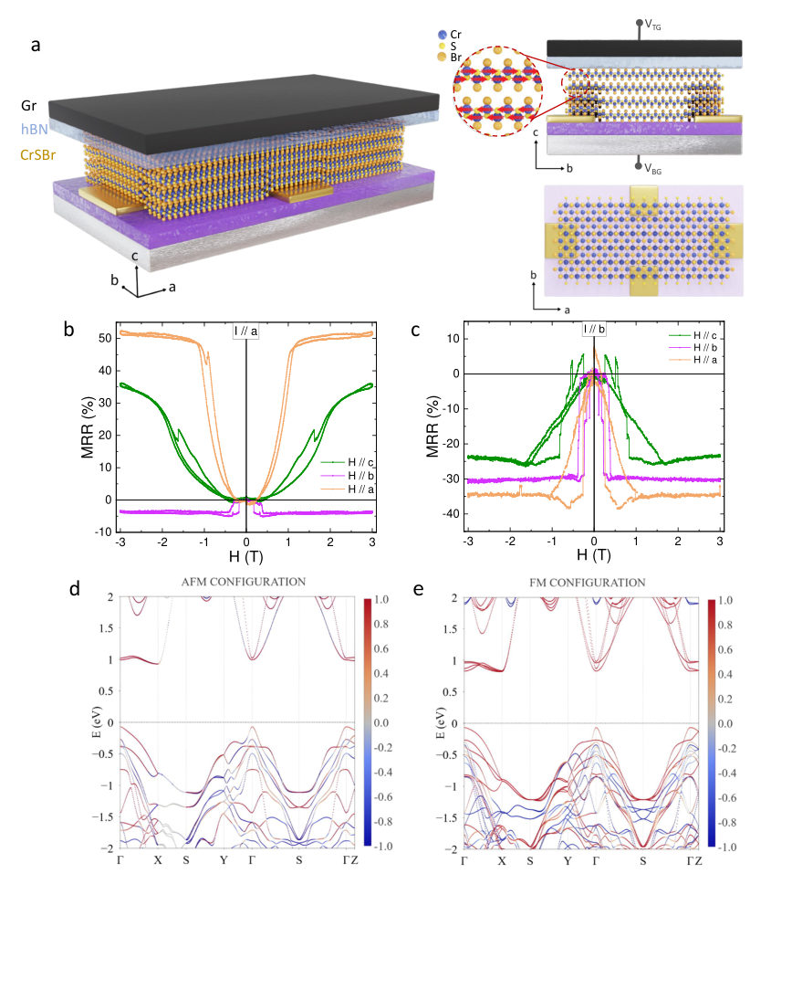
<figcaption class="paper-figure-caption"><b>Fig 1.</b> Figure 1: Dual gate anisotropic antiferromagnetic transistor. (a) (Left) Schematic of the CrSBr multi-axis dual-gate field-effect transistor, with current measured along the a and b axes of the channel. (Top-right) Figure shows the vertical device structure (arrows indicate crystallographic axes), while the magnified inset highlights the crystal structure along the easy magnetic b-axis, illustrating the antiferromagnetic texture. (Bottom-right) Top view of the electrode configuration relative to the CrSBr crystal. (b) Magnetoresistance ratio (MRR) as a function of magnetic field H applied parallel to the three crystallographic axes, with current along the a-axis, at T = 10 K. (c) Same as...</figcaption>
</figure>
<figure class="paper-figure-card">
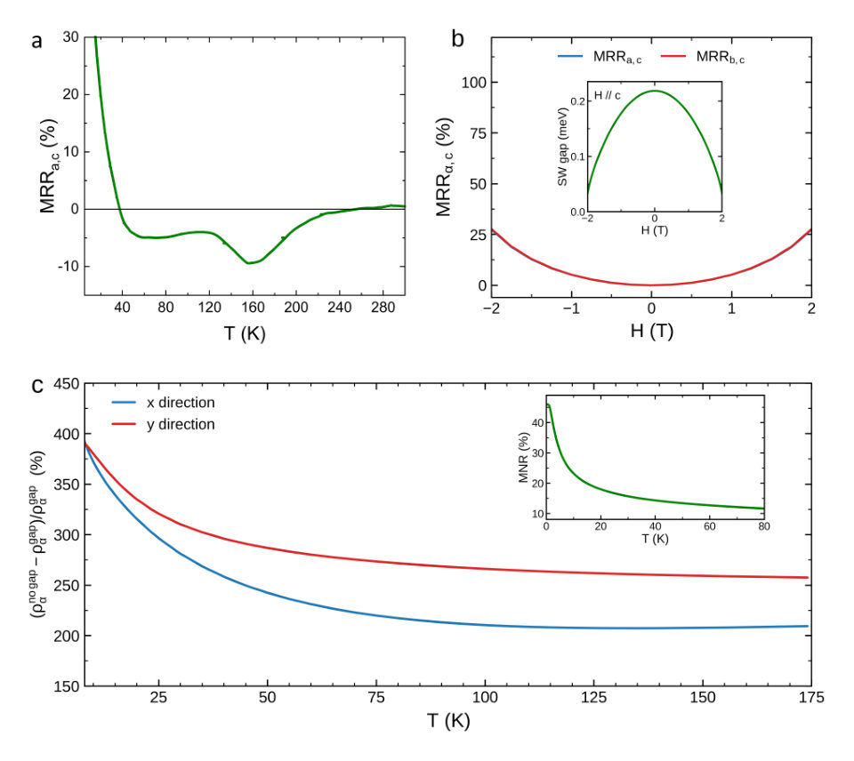
<figcaption class="paper-figure-caption"><b>Fig 2.</b> Figure 2: Magnon assisted transport and spin-wave gap modulation. (a) MRRa,c at H = -3T vs T. (b) Calculated magnon-electron MRRI,c for I ∥a and I ∥b (the two curves are superimposed). (Inset b) Evolution of the calculated spin-wave gap when the magnetic field is applied along the c-axis for T = 0 K. (c) Behaviour with temperature of ρnogap α −ρgap α ρgap α (%), where ρα is the calculated α-directional magnon-electron resistivity with or without a gapped magnon spectrum. (Inset c) The magnon number ratio (MNR) as defined in equation (2) vs temperature.</figcaption>
</figure>
<figure class="paper-figure-card">

<figcaption class="paper-figure-caption"><b>Fig 3.</b> Figure 3: Gate-resolved MRR. (a) MRRa,c vs. H for top-gate (∼8 nm hBN dielectric) voltages VTG = 0, −4, +5 V (left graph). MRRa,c vs. H for bottom-gate (285 nm SiO2 dielectric) voltages VBG = 0, −80, +80 V (right graph). (b) MRRa,c traces (extracted at H = −3 T) vs. VTG (purple color) and VBG (orange color). (c) Color map of the resistance (current along the a-axis) as a function of VTG and VBG at H = 0 in the antiferromagnetic state. (d) Color map of the resistance (current along the a-axis) as a function of VTG and VBG at H = −3 T in the induced ferromagnetic state. T = 10K</figcaption>
</figure>
<figure class="paper-figure-card">
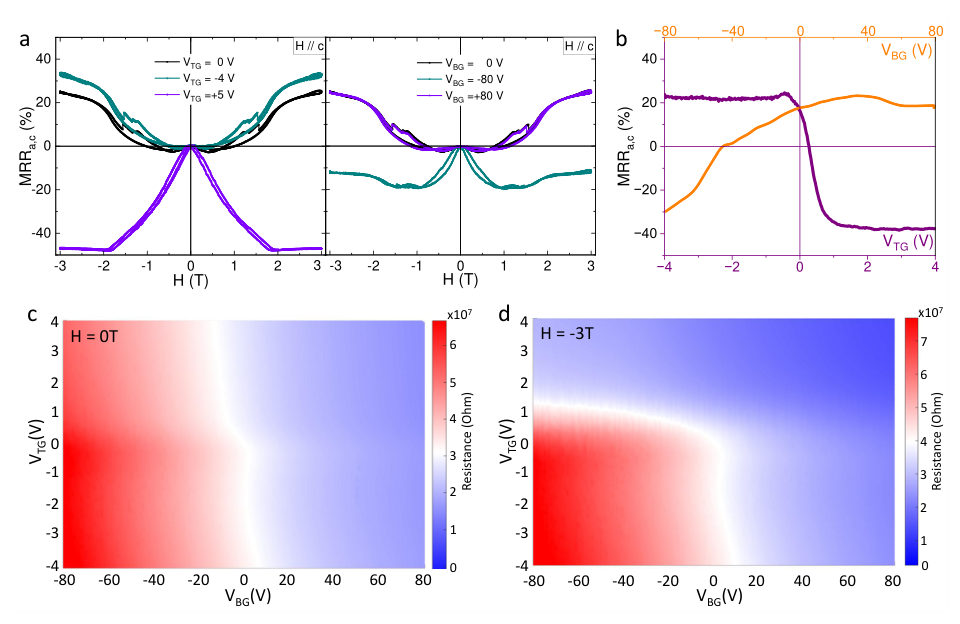
<figcaption class="paper-figure-caption"><b>Fig 4.</b> Figure 4 examines the gate dependence of the MRR for a set of gate configurations selected to maximize either D or n, together with several intermediate values. For each trace, we calculated the corresponding D and n. The legend is arranged in ascending order of the MRR value at −3 T. Consistent with the previous observations, the D values follow the trend of the saturated MRR amplitude, whereas the n values show no clear correlation. Remarkably, when I ∥a, this behaviour is observed for all three magnetic-field orientations (a, b, and c). For MRRa,a (Figure 4a-top), +D has little effect, whereas increasing −D progressively enhances the NMR component, ultimately reversing the MRR completely...</figcaption>
</figure>
<figure class="paper-figure-card">
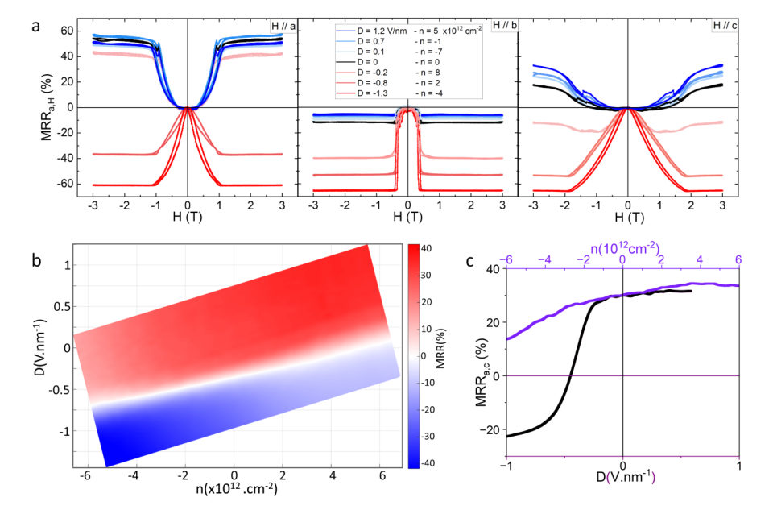
<figcaption class="paper-figure-caption"><b>Fig 5.</b> Figure 4: Disentangling the role of D and n on the Magnetoresistance control. (a) MRRa,H vs H, for H // a-axis (top), H // b-axis (middle), and H // c-axis (bottom). The traces represent different (D,n) combinations maximizing either D or n, with complementary intermediate cases. (b) MRRa,c(D, n) color map showing the variation of the magnetoresistance MRRa,c along the a axis for H // c-axis, as a function of the electrostatic gate-controlled carrier density n, and the displacement field D. (c) Extracted line cuts of MRR(D) at n = 0 and MRR(n) at D = 0.</figcaption>
</figure>
</div>

<p><strong>Summary.</strong> This work investigates spin transport in layered antiferromagnets using a dual-gate FET structure based on $   ext{CrSBr}$. By combining transport measurements with DFT and spin-circuit modeling, the authors demonstrate that the electric displacement field, not just doping, controls the magnetoresistance. This reveals distinct interlayer and intralayer spin-dependent mechanisms responsible for the observed positive and negative magnetoresistance components.</p>
<p><strong>Why it may be interesting.</strong> While focused on condensed matter magnetism, the ability to electrically tune spin transport using a displacement field in a layered material provides a model for controlling quantum spin states using external electric fields, relevant to spintronics and quantum information interfaces.</p>
<details>
<summary>Detailed structure</summary>
<p><strong>Main problem.</strong> The study aims to microscopically understand the origins of anisotropic magnetoresistance (MRR) and how spin transport in layered antiferromagnets can be electrically controlled.</p>
<p><strong>Main result.</strong> The displacement field, rather than carrier doping, is shown to be the dominant electrical control parameter governing the sign and magnitude of the MRR in $  ext{CrSBr}$.</p>
<p><strong>Method.</strong> The research combines systematic magnetotransport measurements using a dual-gate FET structure with advanced theoretical tools, including DFT calculations and an effective spin-circuit model.</p>
<p><strong>Model / system.</strong> The physical system is a layered A-type antiferromagnetic semiconductor, $  ext{CrSBr}$, fabricated into a dual-gate field-effect transistor. The theoretical framework involves modeling magnetic interactions via a Heisenberg Hamiltonian and calculating magnon-electron scattering effects.</p>
<p><strong>Key observables.</strong> Magnetoresistance Ratio (MRR), which exhibits distinct positive (PMR) and negative (NMR) components depending on current and field orientations.</p>
<p><strong>Important parameters / regimes.</strong> The displacement field ($D$) is highlighted as the crucial control parameter, alongside temperature ($T$) and external magnetic field ($H$).</p>
<p><strong>Assumptions / limitations.</strong> The analysis assumes that the observed transport phenomena can be decomposed into contributions from interlayer spin-filtering (negative MRR) and intralayer mechanisms (positive MRR).</p>
<p><strong>Figures summary.</strong> Figures illustrate the $   ext{MRR}$ dependence on magnetic field for different current directions ($  ext{I} \parallel a$ vs $    ext{I} \parallel b$), and show band structures confirming weak interlayer coupling.</p>
<p><strong>Paper structure.</strong> The paper progresses from experimental characterization of anisotropic magnetotransport in the dual-gate FET to theoretical modeling, identifying the roles of the displacement field, interlayer coupling, and magnon-electron scattering in generating the observed MRR components.</p>
</details>
<details>
<summary>Abstract</summary>
<p>Layered A-type antiferromagnetic (AFM) semiconductors offer a unique platform for spintronic devices by combining robust magnetism with gate-tunable semiconducting properties. We present a dual-gate field-effect transistor based on CrSBr, a layered A-type AFM with pronounced transport anisotropy and complex spin dynamics. Our device provides independent control over carrier density and displacement field. Systematic transport measurements reveal that the displacement field, rather than doping, predominantly governs the sign and magnitude of magnetoresistance ratio (MRR). We identify the origins of both negative and positive MRR components and connect them to interlayer and intralayer spin-dependent transport mechanisms. We interpret these findings with ab initio calculations and an effective spin-circuit model that reproduces the anisotropic magnetotransport. Our results identify the displacement field as an efficient electrical control parameter of spin transport in CrSBr and suggest that multi-gate architectures could provide similar control in other layered antiferromagnetic semiconductors.</p>
</details>
<p><sub><a href="#top">↑ back to top</a></sub></p>

<p><a id="paper-2610.39612"></a></p>
<h3 id="fractal-dimensions-of-paths-on-three-dimensional-random-walk-traces"><a href="http://arxiv.org/abs/2610.39612v1">Fractal dimensions of paths on three-dimensional random-walk traces</a></h3>
<p><strong>Authors:</strong> Qiyuan Shi, Xinyi Li, Youjin Deng<br>
<strong>Type:</strong> both · <strong>Category:</strong> statistical mechanics · <strong>PDF:</strong> <a href="https://arxiv.org/pdf/2610.39612v1">https://arxiv.org/pdf/2610.39612v1</a><br>
<strong>Analysis basis:</strong> full PDF text, analyzed in chunks
<strong>Topic relevance:</strong> <code>analog quantum simulation</code> <strong>1/5</strong> · <code>methods for driven-dissipative</code> <strong>1/5</strong> · <code>non-equilibrium universality</code> <strong>1/5</strong></p>
<div class="figure-strip-hint">↔ Scroll figures horizontally</div>
<div class="paper-figures-scroll">
<figure class="paper-figure-card">
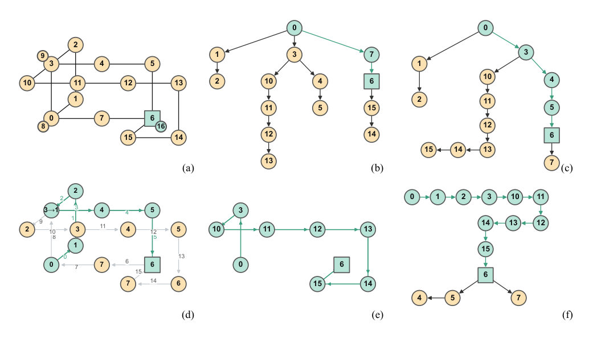
<figcaption class="paper-figure-caption"><b>Fig 1.</b> FIG. 1. Schematic illustration of paths constructed from a 16-step random walk on the cubic lattice. (a) One realization of the walk. The number t identifies the site Xt occupied at step t, for t = 0, . . . , 16. Each distinct site is labeled by its first-visit time, and an attached smaller circle records a later visit to the same site. The walk starts at the circle labeled 0. Its final position at t = 16 is the site first visited at t = 6, which is marked by a square and joined to the attached circle labeled 16. The walk visits M = 14 distinct sites. Panels (b)–(f) are constructed from the walk in panel (a). In panels (b), (c), (e), and (f), each site is identified by its first-visit time....</figcaption>
</figure>
<figure class="paper-figure-card">
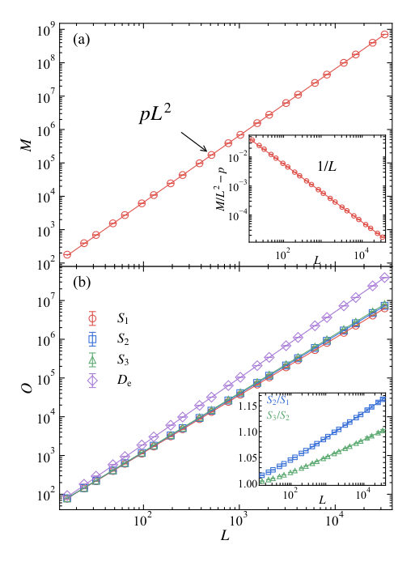
<figcaption class="paper-figure-caption"><b>Fig 2.</b> FIG. 2. Mean mass and mean path lengths of 3D random walks against the diffusive length L. Open symbols are Monte Carlo data. Error bars are smaller than the symbol sizes in both main panels. (a) The mass M and the exact asymptote pL2 (solid line), where p is the escape probability. The inset shows M/L2 −p, and the solid line is proportional to L−1. (b) The mean path lengths S1, S2, S3, and De. The solid lines have slopes given by the exponents dO in Table I. The inset shows the ratios S2/S1 and S3/S2 on a logarithmic L axis, and the solid lines are proportional to LdS2 −dS1 and LdS3 −dS2 .</figcaption>
</figure>
<figure class="paper-figure-card">
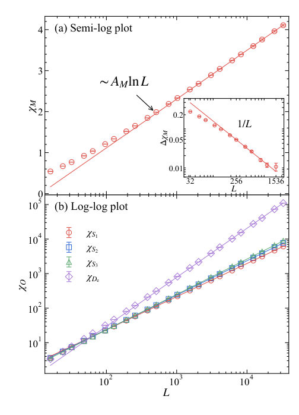
<figcaption class="paper-figure-caption"><b>Fig 3.</b> FIG. 3. Fluctuations χO, Eq. (4), of the mass and the path lengths. Open symbols are Monte Carlo data. Error bars are smaller than the symbol sizes in both main panels. (a) The mass fluctuation χM on a logarithmic horizontal axis. The solid line is AM ln L + B, with the exact coefficient AM of Eq. (6) and the constant B from a fit to Eq. (7). The inset shows the remaining correction ∆χM = χM −A ln L −B. The solid line indicates its L−1 decay. (b) The path-length fluctuations χS1, χS2, χS3, and χDe. The solid lines are power laws with the exponents dχO in Table I.</figcaption>
</figure>
<figure class="paper-figure-card">
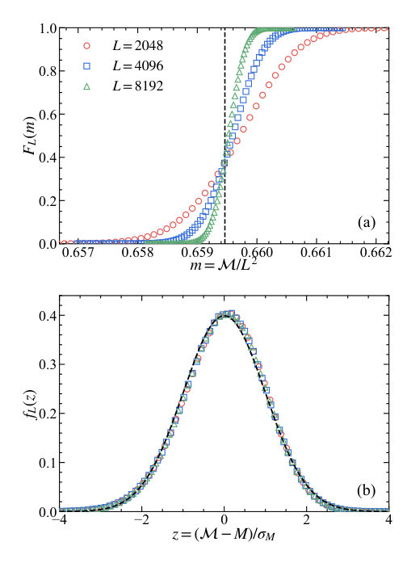
<figcaption class="paper-figure-caption"><b>Fig 4.</b> FIG. 4. Distributions of the mass for L = 2048, 4096, and 8192. (a) Cumulative distribution FL(m) of m = M/L2. The vertical dashed line marks the escape probability p. (b) Probability density fL(z) of the standardized mass z = (M− M)/σM. The dashed curve is the standard Gaussian density.</figcaption>
</figure>
<figure class="paper-figure-card">
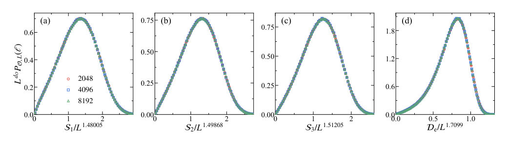
<figcaption class="paper-figure-caption"><b>Fig 5.</b> FIG. 5. Scaling collapse of the path-length probability densities for L = 2048, 4096, and 8192. Panels (a)–(d) show S1, S2, S3, and De, respectively. The densities are plotted as LdOPO,L(ℓ) against ℓ/LdO, as in Eq. (12), where ℓis the path length and dO is taken from Table I.</figcaption>
</figure>
</div>

<p><strong>Summary.</strong> This paper numerically determines the fractal dimensions of several distinct paths traced on the history of a random walk in 3D. By comparing paths defined by different constraints—such as shortest distance versus time-respecting order—the authors show that these constraints lead to measurably different scaling exponents. The results provide precise benchmarks for understanding path geometry in disordered or constrained random systems.</p>
<p><strong>Why it may be interesting.</strong> While focused on classical random walks, the study of path geometry and scaling exponents in complex, constrained random processes shares mathematical techniques with analyzing entanglement structures or path integrals in quantum field theory.</p>
<details>
<summary>Detailed structure</summary>
<p><strong>Main problem.</strong> The study investigates the fractal dimensions of various paths connecting the start and end points of a simple random walk on an infinite cubic lattice.</p>
<p><strong>Main result.</strong> The fractal dimensions for different path selection rules (e.g., undirected shortest path vs. DFS path) are distinct and scale according to specific exponents, providing numerical benchmarks for path geometry.</p>
<p><strong>Method.</strong> Monte Carlo simulations are used to calculate the mean lengths and analyze the scaling behavior of different path types over large lattice sizes.</p>
<p><strong>Model / system.</strong> The system is a simple random walk on the infinite cubic lattice (Z^3). Paths are defined on the graph formed by the visited sites and traversed bonds of this walk.</p>
<p><strong>Key observables.</strong> Mean path lengths ($S_1, S_2, S_3, D_e$), fractal dimensions ($d_O$), and the scaling exponents governing the tails of the path length probability distributions.</p>
<p><strong>Important parameters / regimes.</strong> The lattice dimension (d=3), the number of steps ($N=L^2$), and the specific path selection rules (undirected shortest, time-respecting, DFS).</p>
<p><strong>Assumptions / limitations.</strong> The analysis assumes a finite-size scaling ansatz for the path lengths and analyzes the algebraic and stretched exponential decay of the distribution tails.</p>
<p><strong>Figures summary.</strong> Figures illustrate schematic comparisons of different paths (e.g., for a 16-step walk) and show the scaling collapse of path-length probability densities for various path types.</p>
<p><strong>Paper structure.</strong> The paper systematically compares path lengths derived from different rules ($S_1, S_2, S_3, D_e$) against known benchmarks (LERW). It then analyzes the scaling of the mean lengths, fluctuations, and the functional form of the path length probability distributions.</p>
</details>
<details>
<summary>Abstract</summary>
<p>We study four paths that join the starting site to the final position of a simple random walk of \(N=L^2\) steps on the infinite cubic lattice. The paths are selected on the walk trace---the graph of visited sites and traversed bonds---by different rules: the undirected shortest path \(S_1\), the directed shortest path \(S_2\), the time-respecting shortest path \(S_3\), and the depth \(D_e\) of the final site in a depth-first-search tree. Monte Carlo simulations for \(L\) up to 32768 give mean lengths scaling as \(L^{d_O}\), with \(d_{S_1}=1.48005(9)\), \(d_{S_2}=1.49868(5)\), \(d_{S_3}=1.51205(5)\), and \(d_{D_e}=1.7099(7)\), so that \(d_{S_1}<d_{S_2}<d_{S_3}<d_{\rm LE}<d_{D_e}\), where $d_{\rm LE}=1.62400(5)$ is the known loop-erased-random-walk exponent. Imposing traversal directions increases the shortest-path exponent, and imposing time order increases it further; these constraints therefore change the scaling exponent, not only the amplitude. For every path, the standard deviation scales with the same exponent as the mean, so it is scale-invariant, unlike the visited-site mass; the rescaled length distributions collapse onto a finite-width scaling function. No analytical theory currently predicts these exponents; our results provide precise numerical benchmarks for future studies of path geometry on random-walk traces.</p>
</details>
<p><sub><a href="#top">↑ back to top</a></sub></p>

<p><a id="paper-2610.39961"></a></p>
<h3 id="microscopic-mechanism-and-control-of-reentrant-localization"><a href="http://arxiv.org/abs/2610.39961v1">Microscopic Mechanism and Control of Reentrant Localization</a></h3>
<p><strong>Authors:</strong> Pei-Jie Chang, Quanfeng Lu, Wentao Yang, Dong Ruan, Gui-Lu Long<br>
<strong>Type:</strong> theory · <strong>Category:</strong> disordered systems and neural networks · <strong>PDF:</strong> <a href="https://arxiv.org/pdf/2610.39961v1">https://arxiv.org/pdf/2610.39961v1</a><br>
<strong>Analysis basis:</strong> full PDF text, analyzed in chunks
<strong>Topic relevance:</strong> <code>Frenkel-Kontorova</code> <strong>1/5</strong> · <code>analog quantum simulation</code> <strong>1/5</strong> · <code>driven-dissipative phase transition</code> <strong>1/5</strong></p>
<div class="figure-strip-hint">↔ Scroll figures horizontally</div>
<div class="paper-figures-scroll">
<figure class="paper-figure-card">
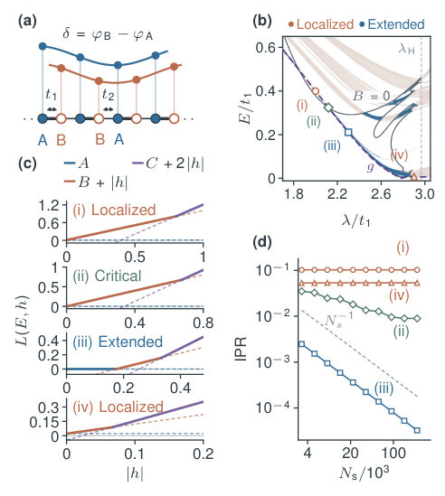
<figcaption class="paper-figure-caption"><b>Fig 1.</b> FIG. 1. Reentrance at the central-gap edge. (a) Dimer chain with hoppings t1, t2 and relative phase δ. (b) Gray: 3194-site spectrum; blue/orange: growth-based extended/localized samples. Gray curves: zero-growth contour B = 0; pur- ple dashed: edge g; vertical dashed: recovery ceiling λH = 2√t1t2. Markers (i–iv): λ/t1 = 2.00, λc/t1, 2.30, 2.90, with λc/t1 ≃2.12 (critical release). (c) Three-branch LE en- velopes; dashed: individual branches. (d) IPR scaling over ten sizes 3194 ≤Ns ≤242786; dashed: N −1 s . Methods: SM Sec. S4.</figcaption>
</figure>
<figure class="paper-figure-card">
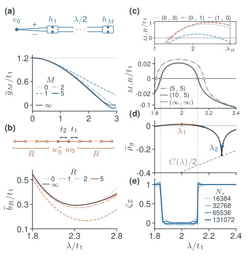
<figcaption class="paper-figure-caption"><b>Fig 2.</b> FIG. 2. Capture and release in the hopping model. (a) Edge estimates with M physical Fourier channels per side. (b) Resonance estimates with R auxiliary dimers per side; ∞: independent bulk references in (a,b). (c) Return mechanism: ∆M,R = egM −ebR, with linear overview (upper) and asinh detail (lower). The first channel-return correction to g, (M, R) = (1, 0), already yields capture and release. Circles: refined contacts; upper dashed line: recovery ceiling λH. (d) Growth-rate check: mode estimate eρg (black), direct dual transfer (dots), and ordered controls (diamonds). Dotted: zero; dashed: channel-isolation threshold C/2. (e) Fixed- packet scaling ζI; lines/bands: two-phase mean/range....</figcaption>
</figure>
<figure class="paper-figure-card">
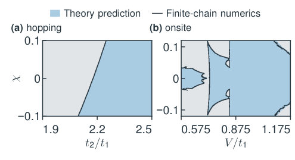
<figcaption class="paper-figure-caption"><b>Fig 3.</b> FIG. 3. Regions of reentrant recovery in (a) hopping and (b) onsite models. Blue: theory prediction from Eq. (7); dark lines: numerical recovery boundaries from a separate real- space diagonalization and participation protocol for the fixed IDS packet; gray: no ordered pair satisfying Eq. (7) detected by the stated search. Here χ = δ −πω. Participation criteria and finite-size checks: SM Sec. S4.</figcaption>
</figure>
<figure class="paper-figure-card">
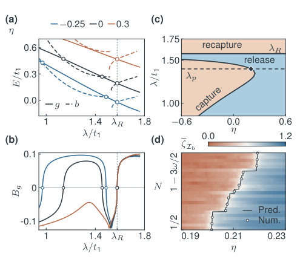
<figcaption class="paper-figure-caption"><b>Fig 4.</b> FIG. 4. Compensated recovery in the onsite model. (a) Edge g (solid) and neutral boundaries b (dashed) for η = −0.25, 0, 0.30. Circles: contacts; vertical guide: pinned λR. (b) Corresponding edge growth Bg = Bη(g, λ) on an asinh scale. At η = 0.30, only recapture remains. (c) Blue/orange: Bg &lt; 0/Bg &gt; 0. Dashed: λp = 1.40t1; diamond: re- lease intersection. (d) Four-phase mean participation ex- ponents ζIb for 8362 →16724 sites versus η and IDS label N. Line/circles: predicted/direct target thresholds. Here I = (1/2, 1−3ω/2), ω = ( √</figcaption>
</figure>
</div>

<p><strong>Summary.</strong> This theoretical work elucidates the mechanism behind reentrant localization in quasiperiodic dimer chains, showing that the process is governed by the relative crossing of spectral edges and resonance boundaries. By employing an exact sublattice mapping, the authors demonstrate a method to actively control the parameter regime where extended states are recovered, providing precise thresholds for this phenomenon.</p>
<p><strong>Why it may be interesting.</strong> The concept of reentrant behavior—where a parameter drives a system through multiple distinct phases (localized $    o$ extended $   o$ localized $  o$ extended)—is highly relevant to understanding complex many-body dynamics in disordered or quasiperiodic media.</p>
<details>
<summary>Detailed structure</summary>
<p><strong>Main problem.</strong> The paper investigates the microscopic mechanism and control of 'reentrant localization' in quasiperiodic systems, where the modulation causing localization can subsequently restore extended states.</p>
<p><strong>Main result.</strong> Reentrance is driven by the successive crossing of the spectral edge (from Fourier scattering) relative to a localization boundary set by a neutral auxiliary resonance. Furthermore, compensated sublattice modulation allows for the precise control of the recovery window.</p>
<p><strong>Method.</strong> The analysis combines spectral theory (using self-energy calculations and spectral edge tracking) with real-space diagnostics like the Inverse Participation Ratio (IPR) and growth rate analysis.</p>
<p><strong>Model / system.</strong> The system is a quasiperiodic dimer chain described by a Hamiltonian involving onsite potentials modulated by a quasiperiodic function $    heta_m$. The analysis maps this to a dual chain of coupled momentum channels and an auxiliary-chain eigen-problem.</p>
<p><strong>Key observables.</strong> Integrated Density of States (IDS) packets, spectral edge ($e_{gM}$), neutral resonance boundary ($e_{bR}$), and the relative motion $\Delta M, R = e_{gM} - e_{bR}$.</p>
<p><strong>Important parameters / regimes.</strong> Modulation strength ($\lambda$), relative phase ($\delta$), and the modulation control parameter ($\eta$) used for sublattice compensation.</p>
<p><strong>Assumptions / limitations.</strong> The analysis relies on mapping the system to an auxiliary chain and assumes that the recovery mechanism can be controlled by manipulating the sublattice modulation potentials.</p>
<p><strong>Figures summary.</strong> Figures illustrate the spectral-edge motion relative to the neutral resonance, mapping out regions of reentrant recovery, and showing the dependence of participation exponents on the control parameter $\eta$.</p>
<p><strong>Paper structure.</strong> The paper establishes the problem using the dimer chain Hamiltonian, develops the theoretical framework by mapping to Fourier channels and auxiliary resonances, and then details the control mechanism using compensated sublattice modulation to predict and confirm recovery thresholds for specific IDS labels.</p>
</details>
<details>
<summary>Abstract</summary>
<p>Increasing quasiperiodic modulation can restore extended states after localization, raising the question of how the same modulation drives both localization and recovery. We identify a microscopic mechanism in quasiperiodic dimer chains by resolving scattering between Fourier channels. Specifically, scattering into neighboring channels and back shifts the spectral edge relative to a localization boundary determined by a neutral auxiliary resonance. Their successive crossings drive the same spectral packet with fixed integrated-density-of-states (IDS) labels into localization and back into an extended regime. This recovery persists across finite parameter ranges in both gap-opening families, including relative-phase detuning. Furthermore, an exact sublattice mapping enables compensated control of the recovery window and predicts recovery thresholds for individual IDS labels.</p>
</details>
<p><sub><a href="#top">↑ back to top</a></sub></p>

<p><a id="paper-2610.40298"></a></p>
<h3 id="structural-signatures-of-primary-and-secondary-relaxation-during-physical-aging-of-a-metallic-glass"><a href="http://arxiv.org/abs/2610.40298v1">Structural signatures of primary and secondary relaxation during physical aging of a metallic glass</a></h3>
<p><strong>Authors:</strong> Beatrice Baraldi, Stefano Marchesin, Davide Marchesi, Lara Piemontese, Francesco Dallari, Søren S. Sørensen, Eloi Pineda, Marco Di Michiel, Giulio Monaco, Peihao Sun<br>
<strong>Type:</strong> experiment · <strong>Category:</strong> disordered systems and neural networks · <strong>PDF:</strong> <a href="https://arxiv.org/pdf/2610.40298v1">https://arxiv.org/pdf/2610.40298v1</a><br>
<strong>Analysis basis:</strong> full PDF text, analyzed in chunks
<strong>Topic relevance:</strong> <code>analog quantum simulation</code> <strong>1/5</strong> · <code>non-equilibrium universality</code> <strong>1/5</strong> · <code>scars &amp; prethermalization</code> <strong>1/5</strong></p>
<div class="figure-strip-hint">↔ Scroll figures horizontally</div>
<div class="paper-figures-scroll">
<figure class="paper-figure-card">
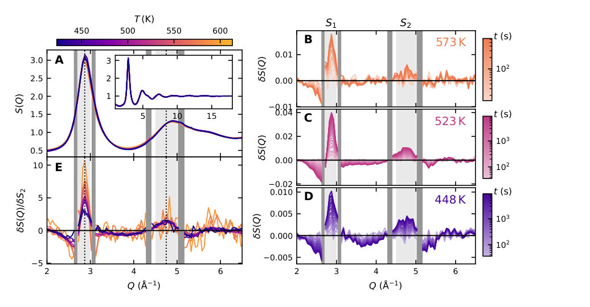
<figcaption class="paper-figure-caption"><b>Fig 1.</b> FIG. 1. Evolution of the structure factor during aging. (A) Time-averaged structure factor, S(Q), at various tem- peratures indicated by the color bar. The inset shows the full measured Q-range. Dark-gray shaded regions mark Q-ranges potentially influenced by Bragg reflections from gold from the FSC chip and therefore excluded from the analysis. (B–D) Aging-induced changes in S(Q) at three representative temperatures. The curves show the evolution relative to the initial measurement at each temperature. Light-gray shaded regions identify the ranges used to calculate the changes associated with the first- and second-peak regions, δS1 and δS2, respectively. (E) Aging-induced changes in the...</figcaption>
</figure>
<figure class="paper-figure-card">
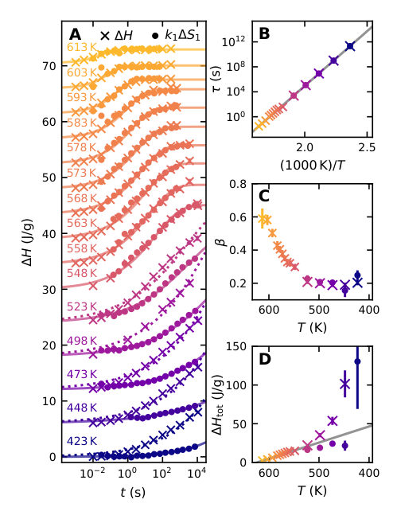
<figcaption class="paper-figure-caption"><b>Fig 2.</b> FIG. 2. Relationship between enthalpy relaxation and changes in the first-peak region. (A) Enthalpy change, ∆H, measured at different aging temperatures (crosses, ×), and the scaled structural change in the first-peak region, k1∆S1 (filled circles, •). Solid and dotted curves show KWW fits. (B–D) Temperature dependence of the fitted KWW re- laxation time, τ, stretching exponent, β, and total relaxation amplitude, ∆Htot, respectively. Crosses represent parameters obtained from fits to ∆H, whereas filled circles represent pa- rameters obtained from fits to k1∆S1 at T &lt; 548 K. The solid line in panel (B) is an Arrhenius fit to the relaxation times. The solid line in panel (D) is a linear fit...</figcaption>
</figure>
<figure class="paper-figure-card">
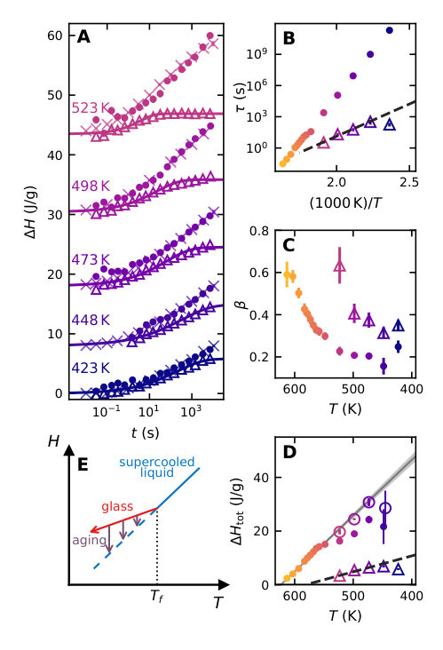
<figcaption class="paper-figure-caption"><b>Fig 3.</b> FIG. 3. Secondary relaxation revealed by the resid- ual enthalpy change at low temperatures. (A) En- thalpy change, ∆H, during low-temperature aging (crosses, ×), residual enthalpy change after subtraction of the first- peak contribution, ∆H −k1∆S1 (triangles, △), and predic- tions of the structural model in Eq. (3) (filled circles, •). Solid curves are KWW fits to the residual enthalpy change. (B– D) Temperature dependence of the KWW relaxation time, τ, stretching exponent, β, and total relaxation amplitude, ∆Htot, respectively. Filled circles reproduce the parameters obtained from the first-peak contribution, corresponding to the filled circles at T &lt; 548 K and the crosses at T ≥548 K in...</figcaption>
</figure>
<figure class="paper-figure-card">
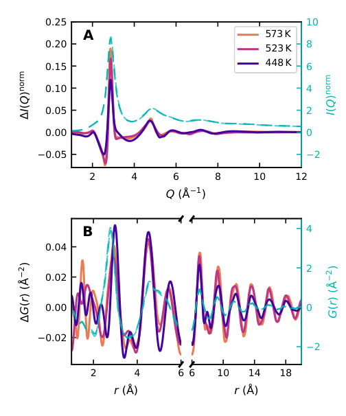
<figcaption class="paper-figure-caption"><b>Fig 4.</b> FIG. 4. Real-space signatures of the aging-induced structural changes. (A) Normalized intensity profile, I(Q), for the average structure at three representative aging tem- peratures (dashed curves, right axis), together with the cor- responding normalized aging-induced change, ∆I(Q) (solid curves, left axis). (B) Pair distribution function, G(r), for the average structure at the same temperatures (dashed curves, right axis), together with the corresponding aging-induced change, ∆G(r) (solid curves, left axis). The changes are nor- malized using the intensity variation in the Q-range associated with S2, as described in the Methods section.</figcaption>
</figure>
<figure class="paper-figure-card">
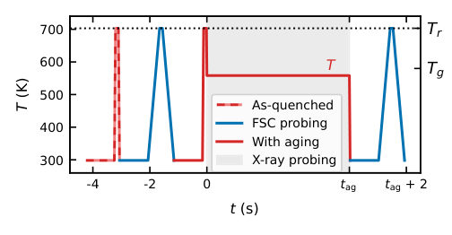
<figcaption class="paper-figure-caption"><b>Fig 5.</b> FIG. 5. Thermal protocol. The two sample-preparation ramps are shown in red, one without and one with the aging isotherm. XRD measurements are acquired only during the aging isotherm (gray-shaded region). In contrast, FSC mea- surements are performed during the probing ramps (blue), fol- lowing either the aged or non-aged preparation. The heating and cooling rates are fixed at 104 K/s during sample prepara- tion (red ramps) and at 103 K/s for probing (blue ramps).</figcaption>
</figure>
</div>

<p><strong>Summary.</strong> This experimental study investigates physical aging in a metallic glass using combined X-ray scattering and calorimetry. By analyzing structural changes associated with the first ($S_1$) and second ($S_2$) diffraction peaks, the authors successfully decouple the total relaxation into two distinct processes. This provides strong evidence that primary aging relates to medium-range ordering, while secondary aging is governed by shorter-range structural rearrangements.</p>
<p><strong>Why it may be interesting.</strong> The clear separation of relaxation into distinct structural length scales (MRO vs. SRO) provides a quantitative structural framework for understanding non-equilibrium dynamics in disordered materials, which is relevant to understanding complex energy landscapes in many-body quantum systems.</p>
<details>
<summary>Detailed structure</summary>
<p><strong>Main problem.</strong> The study aims to understand the microscopic structural evolution that occurs during the physical aging process in metallic glasses, specifically distinguishing between primary and secondary relaxation mechanisms.</p>
<p><strong>Main result.</strong> The research establishes a direct link between thermodynamic relaxation and structural changes, demonstrating that primary and secondary aging processes are associated with distinct structural length scales (Medium-Range vs. Short-Range Ordering).</p>
<p><strong>Method.</strong> The authors employed a combination of fast scanning calorimetry (FSC) and in-situ X-ray total scattering to measure structural changes and enthalpy relaxation over vast time and temperature ranges.</p>
<p><strong>Model / system.</strong> The physical system is a metallic glass ($  ext{Pd}<em 30>{42.5}  ext{Cu}</em>}    ext{Ni<em 20>{7.5}   ext{P}</em>$). The analysis models the total enthalpy change as a sum of contributions from primary relaxation (linked to $S_1$) and a secondary relaxation (linked to $S_2$).</p>
<p><strong>Key observables.</strong> Structure factor $S(Q)$, Pair Distribution Function (PDF) changes ($\Delta G(r)$), and enthalpy relaxation $\Delta H(t)$ fitted using the Kohlrausch–Williams–Watts (KWW) function.</p>
<p><strong>Important parameters / regimes.</strong> Temperature range spanning above $T_g$ to $>150 	ext{ K}$ below it; relaxation processes characterized by distinct activation energies ($\sim 336 	ext{ kJ/mol}$ for primary, $\sim 119 	ext{ kJ/mol}$ for secondary).</p>
<p><strong>Assumptions / limitations.</strong> The change in PDF ($\Delta G(r)$) is assumed to be proportional to the change in the intensity profile ($\Delta I(Q)$) in the small variation limit.</p>
<p><strong>Figures summary.</strong> Figures show the evolution of $S(Q)$ and $\Delta G(r)$ during aging, and plot the relationship between the structural signatures $\delta S_1$ and $\delta S_2$ across different aging temperatures.</p>
<p><strong>Paper structure.</strong> The paper systematically analyzes the temperature dependence of relaxation kinetics using KWW fitting, first establishing the primary relaxation pathway at higher temperatures, and then introducing a secondary, distinct relaxation pathway at lower temperatures, linking each to a specific structural length scale.</p>
</details>
<details>
<summary>Abstract</summary>
<p>Physical aging drives glasses toward equilibrium and changes their thermodynamic and mechanical properties, but the accompanying microscopic structural evolution remains poorly understood. Here, using our recently developed low-background setup combining fast scanning calorimetry with \emph{in-situ} X-ray total scattering, we investigate microscopic structural changes during physical aging in Pd$_{42.5}$Cu$_{30}$Ni$_{7.5}$P$_{20}$ metallic glass. The measurements span an unprecedented six orders of magnitude in time and a temperature range extending from above the glass transition temperature to more than 150\,K below it. We observe dominant structural changes near the first and second peaks of the structure factor. Near and above the glass transition temperature, changes in the first sharp diffraction peak closely follow enthalpy relaxation and are associated predominantly with increasing degrees of medium-range ordering. At lower temperatures, the enthalpy evolution can no longer be described by this contribution alone, revealing an additional, faster relaxation process that correlates with changes near the second diffraction peak and thus short-range structural rearrangements, including increased Pd--Pd correlations. These results establish a direct connection between thermodynamic relaxation and structural evolution, providing strong evidence that primary and secondary aging processes are associated with distinct structural length scales.</p>
</details>
<p><sub><a href="#top">↑ back to top</a></sub></p>

<p><a id="paper-2610.40174"></a></p>
<h3 id="a-density-calculus-for-quantum-field-theory"><a href="http://arxiv.org/abs/2610.40174v1">A density calculus for quantum field theory</a></h3>
<p><strong>Authors:</strong> Tanay Kibe, Pratik Roy<br>
<strong>Type:</strong> theory · <strong>Category:</strong> other · <strong>PDF:</strong> <a href="https://arxiv.org/pdf/2610.40174v1">https://arxiv.org/pdf/2610.40174v1</a><br>
<strong>Analysis basis:</strong> full PDF text, analyzed in chunks
<strong>Topic relevance:</strong> <code>Keldysh / 2PI / non-Gaussian methods</code> <strong>1/5</strong> · <code>quantum measurements</code> <strong>1/5</strong></p>
<div class="figure-strip-hint">↔ Scroll figures horizontally</div>
<div class="paper-figures-scroll">
<figure class="paper-figure-card">
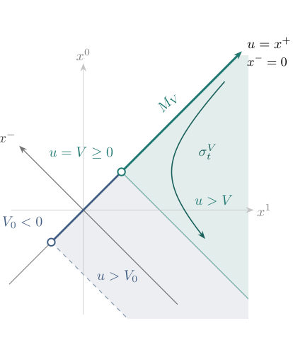
<figcaption class="paper-figure-caption"><b>Fig 1.</b> Figure 1. Spacetime section of the null-plane setup, with transverse directions suppressed. The initial half-line u &gt; V0 (blue and green) and the later half-line u &gt; V (green) lie on x−= 0 and define M = MV0 and MV ⊂M. Shading indicates the corresponding wedges. The curved arrow shows a vacuum modular orbit in the later wedge. By the Bisognano–Wichmann theorem, σV t acts as a Lorentz boost about the cut: (u −V, x−) 7→(e−2πt(u −V ), e2πtx−). The arrow points towards increasing t. On x−= 0, the action reduces to dilation about V . A Weyl unitary U = W(f0) ∈M prepares the coherent state ψ(a) = ω(U ∗aU), which is held fixed as the cut advances. Translation TV −V0 : M →MV identifies its...</figcaption>
</figure>
</div>

<p><strong>Summary.</strong> This work introduces a generalized 'density calculus' necessary to handle quantum information measures in the highly complex setting of Type III von Neumann algebras arising in QFT. By employing Haagerup noncommutative L^p spaces, the authors extend concepts like relative entropy and Rényi divergence to these algebras. The successful application to a chiral current demonstrates the method's power in verifying fundamental physical constraints like the Rényi QNEC.</p>
<p><strong>Why it may be interesting.</strong> While highly abstract, the development of generalized entropy measures (like SRD) and energy conditions (QNEC) in the context of operator algebras is crucial for understanding quantum correlations and causality in relativistic quantum field theories, which underpins modern quantum gravity research.</p>
<details>
<summary>Detailed structure</summary>
<p><strong>Main problem.</strong> The paper addresses the mathematical challenge of extending familiar quantum information calculus (like density matrices and Schatten norms) to local observable algebras in Quantum Field Theory (QFT) that are of Type III, lacking a standard trace.</p>
<p><strong>Main result.</strong> The authors develop a 'density calculus' using Haagerup noncommutative L^p spaces, successfully calculating the sandwiched Rényi divergence for a chiral current excitation and verifying key physical conditions like monotonicity and the Rényi QNEC.</p>
<p><strong>Method.</strong> The methodology involves constructing the calculus via crossed products and utilizing Haagerup densities to replace trace-class operators, generalizing techniques from finite dimensions to infinite-dimensional von Neumann algebras.</p>
<p><strong>Model / system.</strong> The theoretical framework is Quantum Field Theory, specifically focusing on the local observable algebras associated with spacetime regions, which are modeled as Type III von Neumann algebras. A concrete application is the chiral current derived from a free massive scalar field.</p>
<p><strong>Key observables.</strong> Sandwiched Rényi Divergence (SRD), Relative Entropy, Quantum Null Energy Condition (QNEC), and Haagerup densities.</p>
<p><strong>Important parameters / regimes.</strong> The Rényi order parameter $\alpha$, analyzed for $\alpha > 1$ and in the limit $\alpha \to 1$.</p>
<p><strong>Assumptions / limitations.</strong> Assumes familiarity with quantum mechanics and elementary QFT, and relies on the existence of a faithful normal state on the von Neumann algebra.</p>
<p><strong>Paper structure.</strong> The paper introduces the need for the calculus extension, develops the mathematical machinery using Haagerup spaces and crossed products, and concludes with a concrete application calculating the SRD for a chiral current, verifying physical constraints.</p>
</details>
<details>
<summary>Abstract</summary>
<p>These notes provide an introduction to Haagerup noncommutative $L^p$ spaces for quantum field theorists. The aim is to explain how the familiar calculus of density matrices, fractional powers, and Schatten norms extends to local observable algebras of type~III, where an intrinsic trace is unavailable. We develop the construction first for a matrix algebra, making the crossed product, its trace, and the dual action explicit, before passing to general von Neumann algebras. Particular attention is paid to the representation of normal states by Haagerup densities and to the distinction between the crossed-product trace and the canonical Haagerup functional used to compute expectation values. As a concrete application, we calculate the sandwiched Rényi divergence for a coherent excitation of a chiral current, verifying monotonicity under restriction and the Rényi quantum null energy condition at every real order $α>1$. The presentation assumes familiarity with quantum mechanics and elementary quantum field theory, while introducing the operator-algebraic concepts needed for the construction and calculation.</p>
</details>
<p><sub><a href="#top">↑ back to top</a></sub></p>

<p><a id="paper-2610.39349"></a></p>
<h3 id="a-zoo-of-fermionic-relative-renyi-negativities-in-the-sachdev-ye-kitaev-models"><a href="http://arxiv.org/abs/2610.39349v1">A Zoo of Fermionic Relative Rényi Negativities in the Sachdev-Ye-Kitaev Models</a></h3>
<p><strong>Authors:</strong> Linjing Jiang, Pengfei Zhang<br>
<strong>Type:</strong> theory · <strong>Category:</strong> statistical mechanics · <strong>PDF:</strong> <a href="https://arxiv.org/pdf/2610.39349v1">https://arxiv.org/pdf/2610.39349v1</a><br>
<strong>Analysis basis:</strong> full PDF text, analyzed in chunks
<strong>Topic relevance:</strong> <code>Keldysh / 2PI / non-Gaussian methods</code> <strong>1/5</strong> · <code>analog quantum simulation</code> <strong>1/5</strong></p>
<div class="figure-strip-hint">↔ Scroll figures horizontally</div>
<div class="paper-figures-scroll">
<figure class="paper-figure-card">
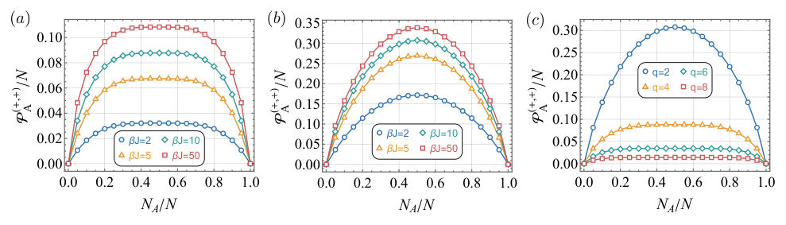
<figcaption class="paper-figure-caption"><b>Fig 1.</b> Figure 1: Numerical results for the relative R´enyi negativity P(+,+) A . Panels (a) and (b) show the results as a function of the subsystem fraction NA/N for q = 4 and q = 2, respectively, with various βJ ∈{2, 5, 10, 50}. Panel (c) compares the results for different values of q at fixed βJ = 10.</figcaption>
</figure>
<figure class="paper-figure-card">
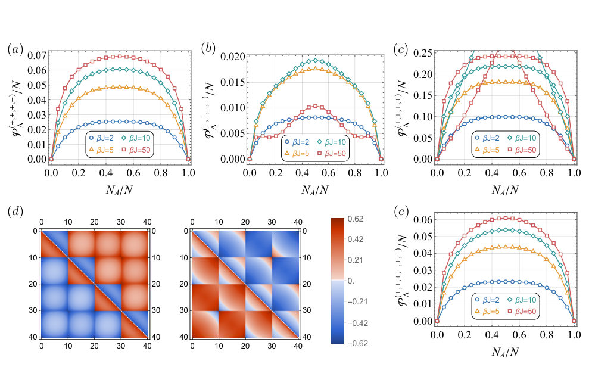
<figcaption class="paper-figure-caption"><b>Fig 2.</b> Figure 2: Numerical results for higher-order relative R´enyi negativities at q = 4 and βJ ∈ {2, 5, 10, 50}. Panels (a-c) show the three nontrivial relative R´enyi negativities at fourth order, 2n = 4. Among these, only the minimal-deviation case, P(+,+,+,−) A , decreases monotonically with increasing temperature for all subsystem fractions NA/N. For P(+,+,+,+) A , multiple saddle- point solutions coexist at low temperatures. Panel (d) displays the Green’s functions GA(τ, τ ′) for two distinct saddles at NA/N = 0.2 and βJ = 10. The solution on the right dominates at small subsystem fractions NA/N. Panel (e) shows the minimal-deviation case for 2n = 6.</figcaption>
</figure>
<figure class="paper-figure-card">
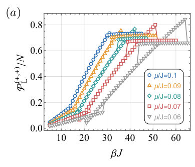
<figcaption class="paper-figure-caption"><b>Fig 3.</b> Figure 3: Numerical results for the relative R´enyi negativities Pfm L = −Re h ln </figcaption>
</figure>
</div>

<p><strong>Summary.</strong> This paper introduces a novel family of relative Rényi negativities to diagnose entanglement in mixed quantum states of strongly correlated fermionic systems. By deriving a path-integral representation applicable to the Sachdev-Ye-Kitaev model, the authors provide a computationally feasible method. This work reveals new entanglement signatures, including first-order transitions, that are otherwise hidden from simple measurements.</p>
<p><strong>Why it may be interesting.</strong> The development of new, tractable entanglement witnesses that work for mixed states in strongly interacting fermionic models provides powerful tools for understanding quantum correlations beyond simple ground-state calculations.</p>
<details>
<summary>Detailed structure</summary>
<p><strong>Main problem.</strong> The primary challenge is characterizing quantum entanglement in mixed quantum states, as established diagnostics are computationally demanding or restricted to small systems.</p>
<p><strong>Main result.</strong> The authors introduce relative Rényi negativities as entanglement witnesses, successfully identifying a class that proxies logarithmic negativity and revealing first-order entanglement transitions invisible to simpler observables.</p>
<p><strong>Method.</strong> They derive a path-integral representation for these negativities by relating fermionic partial time reversal to the size superoperator, enabling evaluation via a large-N expansion.</p>
<p><strong>Model / system.</strong> The study focuses on strongly correlated fermionic systems, specifically the Sachdev-Ye-Kitaev (SYK) model and its generalizations, including the Maldacena-Qi coupled SYK model.</p>
<p><strong>Key observables.</strong> Relative Rényi negativities ($P_f^A$), Logarithmic Negativity, and entanglement entropy.</p>
<p><strong>Important parameters / regimes.</strong> Large-$N$ limit, thermal states, and the structure of the fermionic interactions (random $q$-body couplings).</p>
<p><strong>Assumptions / limitations.</strong> The analysis relies on the path-integral formalism and the large-$N$ expansion, noting that conventional Rényi proxies can fail to certify entanglement.</p>
<p><strong>Paper structure.</strong> The paper introduces the concept of relative Rényi negativities, derives their path-integral representation, and applies this method to calculate entanglement measures in the SYK model, culminating in the identification of new transition types.</p>
</details>
<details>
<summary>Abstract</summary>
<p>Quantum entanglement is a fundamental resource that gives rise to correlations with no classical counterpart in strongly correlated fermionic systems. However, its characterization in mixed quantum states remains challenging. Established entanglement diagnostics, such as logarithmic negativity, are computationally demanding in interacting systems, and their evaluation by exact diagonalization is restricted to small system sizes. Meanwhile, conventional Rényi proxies, including twisted and untwisted Rényi negativities, can be positive even for separable states. In this work, we introduce a family of \textit{relative Rényi negativities} that serve as entanglement witnesses. By relating fermionic partial time reversal to the size superoperator, we establish a path-integral representation for these Rényi negativities, enabling their evaluation in thermal states of the Sachdev-Ye-Kitaev (SYK) model and its generalizations via a large-$N$ expansion. Applying this method, we investigate entanglement in both the original SYK model and the Maldacena-Qi coupled SYK model. We identify a special class of relative Rényi negativities which serve as plausible proxies for logarithmic negativity and uncover first-order entanglement transitions that are invisible to simple observables. These results highlight the utility of relative Rényi negativities as probes of mixed-state entanglement in strongly correlated fermionic systems and suggest the existence of a new class of transitions where these negativities serve as free energies.</p>
</details>
<p><sub><a href="#top">↑ back to top</a></sub></p>

<p><a id="paper-2610.38840"></a></p>
<h3 id="gravitationally-mediated-entanglement-in-interferometers-with-repeated-splitting"><a href="http://arxiv.org/abs/2610.38840v1">Gravitationally Mediated Entanglement in Interferometers with Repeated Splitting</a></h3>
<p><strong>Authors:</strong> Riccardo Zampieri, Sougato Bose<br>
<strong>Type:</strong> theory · <strong>Category:</strong> quantum information and computing · <strong>PDF:</strong> <a href="https://arxiv.org/pdf/2610.38840v1">https://arxiv.org/pdf/2610.38840v1</a><br>
<strong>Analysis basis:</strong> full PDF text, analyzed in chunks
<strong>Topic relevance:</strong> <code>interference shaping light</code> <strong>1/5</strong> · <code>quantum measurements</code> <strong>1/5</strong></p>
<div class="figure-strip-hint">↔ Scroll figures horizontally</div>
<div class="paper-figures-scroll">
<figure class="paper-figure-card">
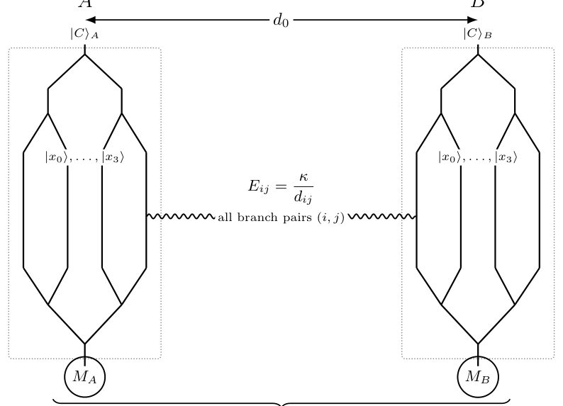
<figcaption class="paper-figure-caption"><b>Fig 1.</b> Figure 1: Schematic of the repeated-splitting interferometric protocol, shown for two splitting stages (n = 2). Two masses, A and B, initially separated by d0, begin in localised centre-of-mass states |C⟩A and |C⟩B. At each forward stage, a reusable two-level degree of freedom controls a binary spatial split; between stages, earlier branch choices may be transferred coherently to a local memory register, so that after two stages each subsystem occupies four positional modes while retaining the complete branch label. During the interaction interval, each branch pair (i, j) accumulates a gravitationally induced phase determined by the interaction energy Eij = κ/dij. The motional branches are...</figcaption>
</figure>
<figure class="paper-figure-card">
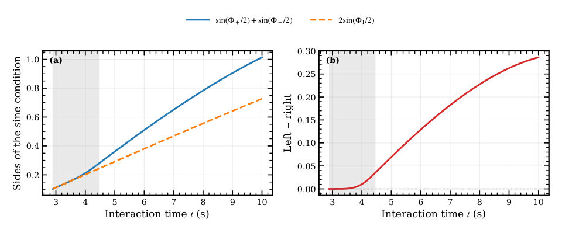
<figcaption class="paper-figure-caption"><b>Fig 2.</b> Figure 2: The sufficient condition in Eq. (74) for the parameters of Table 1 in Section 5. (a) The two sides of the inequality; (b) their difference, which remains nonnegative over the interval shown. The shaded region marks the second splitting stage.</figcaption>
</figure>
<figure class="paper-figure-card">
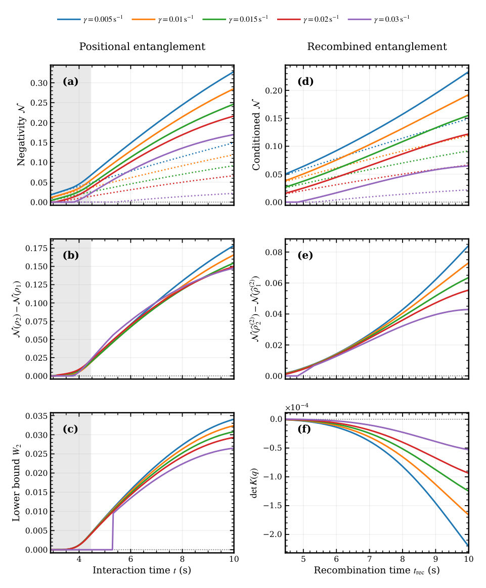
<figcaption class="paper-figure-caption"><b>Fig 3.</b> Figure 3: Numerical comparison of the single- and double-splitting protocols for the parameter set in Table 1. Left column: positional entanglement before recombination. Right column: conditioned entanglement after the restricted two-level readout. Dotted curves denote one splitting stage and solid curves denote two. Panels (a) and (d) show the negativities, (b) and (e) show the corresponding gains, (c) shows the lower bound W2, and (f) shows the Schur determinant det K(q). Shaded intervals mark the second split.</figcaption>
</figure>
</div>

<p><strong>Summary.</strong> This work analyzes protocols for using matter-wave interferometers to detect quantum gravitational effects by measuring entanglement between separated masses. The authors develop theoretical tools to track entanglement through multiple splitting stages, showing that careful protocol design can preserve or enhance positional entanglement against decoherence. This provides a rigorous framework for designing next-generation quantum gravity experiments.</p>
<p><strong>Why it may be interesting.</strong> It directly applies quantum information tools (negativity, entanglement bounds) to a fundamental physics problem (quantum gravity), providing concrete, quantifiable metrics for experimental feasibility in quantum sensing.</p>
<details>
<summary>Detailed structure</summary>
<p><strong>Main problem.</strong> The paper investigates methods to probe the quantum nature of gravity by quantifying entanglement generated between spatially separated masses interacting solely through gravity.</p>
<p><strong>Main result.</strong> It derives conditions under which repeated splitting stages in interferometers can maintain or improve positional entanglement, even in the presence of decoherence.</p>
<p><strong>Method.</strong> The analysis uses quantum information measures like negativity and analyzes the evolution of the density matrix through repeated splitting stages, relating the state to local parity dephasing.</p>
<p><strong>Model / system.</strong> The system is a matter-wave interferometer undergoing controlled, repeated binary spatial splitting stages, where the evolution is governed by gravitational phase accumulation between splits.</p>
<p><strong>Key observables.</strong> Negativity, positional entanglement, and the change in negativity quantified via the negative partial-transpose eigenspace.</p>
<p><strong>Important parameters / regimes.</strong> Gravitational coupling constant (kappa), inter-system distances (d_ij), and decoherence rates (gamma).</p>
<p><strong>Assumptions / limitations.</strong> The analysis assumes the internal system preserves the full branch label during splitting, and it compares protocols assuming gravitational interaction dominates over background forces.</p>
<p><strong>Figures summary.</strong> Figure 1 schematically illustrates the $n=2$ splitting process, showing initial separation, controlled splitting stages using a reusable two-level system and memory, phase accumulation, and final recombination.</p>
<p><strong>Paper structure.</strong> The paper analyzes the state evolution through $n$ splitting stages, relating the density matrix to the previous stage via local parity dephasing. It derives explicit conditions for entanglement preservation and compares protocols using memory versus readout without memory.</p>
</details>
<details>
<summary>Abstract</summary>
<p>Proposals to probe the quantum nature of gravity through entanglement between spatially separated masses have attracted considerable interest. In such schemes, spatial superpositions are prepared through controlled splitting operations that produce several interferometric branches. Here we propose and analyse protocols involving repeated splitting stages, each of which doubles the number of occupied paths. We show that the density matrix after $n$ splitting stages is related to that of the $(n-1)$-splitting protocol through local parity dephasing. Two of the resulting sectors reproduce the preceding state, while the other two acquire additional gravitational phases. Removing the locally generated parts gives an exact lower bound on the change in negativity, expressed in terms of the preceding state's negative partial-transpose eigenspace. For two splitting stages, this leads to an explicit condition on three gravitational phases under which the additional split cannot reduce negativity. We also show that further splitting cannot shorten the lifetime of the generated entanglement. If the local internal system preserves the full branch label, the positional entanglement is retained upon recombination. We describe an implementation using a reusable two-level system and local memories, and compare it with a readout without a memory register. For the latter, we derive an exact condition for when an additional splitting stage improves the readout, based on a $2\times 2$ Schur complement. Numerical simulations show an advantage in positional negativity over the rates considered, with an improvement surviving the restricted readout at all decoherence rates considered at the final readout time.</p>
</details>
<p><sub><a href="#top">↑ back to top</a></sub></p>

<p><a id="paper-2610.39909"></a></p>
<h3 id="kelvin-wave-multiplication-by-sound-emission"><a href="http://arxiv.org/abs/2610.39909v1">Kelvin-Wave Multiplication by Sound Emission</a></h3>
<p><strong>Authors:</strong> Weican Yang<br>
<strong>Type:</strong> theory · <strong>Category:</strong> quantum gases · <strong>PDF:</strong> <a href="https://arxiv.org/pdf/2610.39909v1">https://arxiv.org/pdf/2610.39909v1</a><br>
<strong>Analysis basis:</strong> full PDF text, analyzed in chunks
<strong>Topic relevance:</strong> <code>Keldysh / 2PI / non-Gaussian methods</code> <strong>1/5</strong> · <code>methods for driven-dissipative</code> <strong>1/5</strong></p>
<div class="figure-strip-hint">↔ Scroll figures horizontally</div>
<div class="paper-figures-scroll">
<figure class="paper-figure-card">
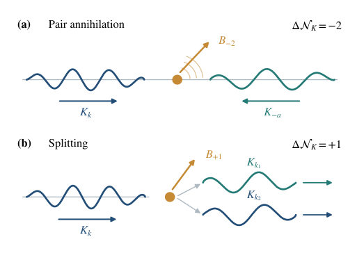
<figcaption class="paper-figure-caption"><b>Fig 1.</b> FIG. 1. Two radiative processes on the same vortex. Coun- terpropagating Kelvin quanta annihilate into m = −2 sound. Splitting leaves two softer quanta and emits m = +1 sound, whose positive angular momentum permits an increase of Kelvin number. The curves indicate displacement modes, not separate vortices.</figcaption>
</figure>
<figure class="paper-figure-card">
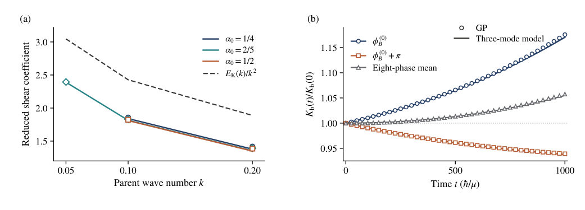
<figcaption class="paper-figure-caption"><b>Fig 2.</b> FIG. 2. Dispersion constraint and coherent Kelvin conversion. (a) Reduced shear coefficient ΛGP odd from microscopic GP matrix elements at q/p = ±0.5 (symbols; definition in Supplemental Material), compared with ΛE = ∆E0/[2α0(1−α0)k2] (solid lines). The dashed estimate EK(k)/k2 uses only the parent dispersion. (b) Population of all retained bound Kelvin modes: GP symbols and independent three-mode predictions for initial sound phases ϕ(0) B and ϕ(0) B + π. Gray triangles show ⟨Kb(t)⟩ϕB/⟨Kb(0)⟩ϕB with equal weights for eight initial phases; the gray line is the corresponding phase-averaged three-mode prediction.</figcaption>
</figure>
<figure class="paper-figure-card">
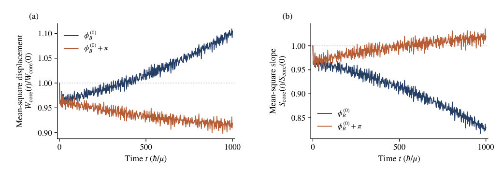
<figcaption class="paper-figure-caption"><b>Fig 3.</b> FIG. 3. Vortex geometry in the same two GP evolutions as Fig. 2(b). (a) Mean-square displacement of the instantaneous vortex zero. (b) Mean-square slope. Both quantities are normalized to their own values at t = 0. The curves retain the preparation transient and fast oscillations; no time average or sound subtraction is applied. The initial sound phase reverses both geometrical trends.</figcaption>
</figure>
</div>

<p><strong>Summary.</strong> This paper analyzes the process where a Kelvin wave on a quantum vortex splits by emitting a sound phonon, leading to an increase in Kelvin wave population. Using the Gross-Pitaevskii equation, the authors show that this multiplication process is dynamically significant and that the resulting population gain is robust against initial phase variations. The work provides deep insights into the nonlinear coupling between quantized excitations and the bulk sound continuum in superfluids.</p>
<p><strong>Why it may be interesting.</strong> This work provides a detailed, quantitative study of nonlinear wave interactions (wave multiplication) within a topological defect (vortex) in a quantum fluid, linking spectral properties to macroscopic observable changes like population growth and geometric deformation.</p>
<details>
<summary>Detailed structure</summary>
<p><strong>Main problem.</strong> The paper investigates the nonlinear process of Kelvin-Wave Multiplication by Sound Emission in superfluid quantum vortices.</p>
<p><strong>Main result.</strong> The splitting channel ($K_k 	o K_{k1} + K_{k2} + B_{+1}$) is dynamically appreciable, and the mean gain of the Kelvin population survives averaging over the initial sound phase.</p>
<p><strong>Method.</strong> The analysis employs the Gross-Pitaevskii (GP) evolution equation, supplemented by microscopic calculations and Hamiltonian modeling to track energy and momentum transfer.</p>
<p><strong>Model / system.</strong> The system models a superfluid quantum vortex, governed by the GP equation. The dynamics involve coupling between Kelvin waves, sound modes, and the background vortex state.</p>
<p><strong>Key observables.</strong> Kelvin population ($K_b$), quadratic Kelvin energy ($E_b$), mean-square displacement ($  ext{Wcore}$), and mean-square slope ($  ext{Score}$).</p>
<p><strong>Important parameters / regimes.</strong> Subsonic sound velocity, initial sound phase ($\phi(0)$ vs. $\phi(0)+\pi$), and the wave number spectrum of excitations.</p>
<p><strong>Assumptions / limitations.</strong> The derivation of the leading shear coefficient neglects axial recoil, and the analysis relies on spectral assumptions for the modes.</p>
<p><strong>Figures summary.</strong> Figures illustrate the radiative processes (annihilation and splitting) on a vortex, comparing GP matrix elements to theoretical estimates, and showing the reversal of population transfer upon a $\pi$ shift of the initial sound phase.</p>
<p><strong>Paper structure.</strong> The paper progresses from identifying the physical process (splitting/annihilation) to developing theoretical relations (rotational invariance, angular momentum balance), and finally validating these concepts through detailed GP simulations and microscopic rate calculations.</p>
</details>
<details>
<summary>Abstract</summary>
<p>A subsonic Kelvin quantum can emit a phonon and split into two softer quanta, increasing Kelvin population while losing energy. In the soft-phonon limit, rotational invariance relates the leading acoustic shear amplitude, odd under reversal of phonon axial momentum, to the energy released. Microscopic calculations support this dispersion dependence. In a reflecting cavity with coherent sound and Kelvin seeds, Gross--Pitaevskii evolution shows Kelvin gain, larger mean-square displacement and smaller mean-square slope; a $π$ shift of the initial sound phase reverses these changes.</p>
</details>
<p><sub><a href="#top">↑ back to top</a></sub></p>

<p><a id="paper-2610.40337"></a></p>
<h3 id="local-determination-of-low-energy-states-in-gapped-fermion-systems-with-weak-long-range-interactions"><a href="http://arxiv.org/abs/2610.40337v1">Local determination of low-energy states in gapped fermion systems with weak long-range interactions</a></h3>
<p><strong>Authors:</strong> Stefan Teufel<br>
<strong>Type:</strong> theory · <strong>Category:</strong> statistical mechanics · <strong>PDF:</strong> <a href="https://arxiv.org/pdf/2610.40337v1">https://arxiv.org/pdf/2610.40337v1</a><br>
<strong>Analysis basis:</strong> full PDF text, analyzed in chunks
<strong>Topic relevance:</strong> <code>analog quantum simulation</code> <strong>1/5</strong> · <code>scars &amp; prethermalization</code> <strong>1/5</strong></p>
<div class="figure-strip-hint">↔ Scroll figures horizontally</div>
<div class="paper-figures-scroll">
<figure class="paper-figure-card">
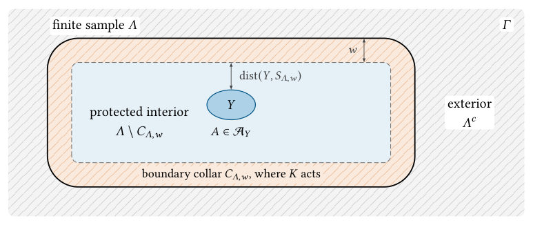
<figcaption class="paper-figure-caption"><b>Fig 1.</b> Figure 1: Schematic geometry of a finite sample. The exterior 𝛬𝑐and the inner boundary collar 𝐶𝛬,𝑤form the excluded region 𝑆𝛬,𝑤, shown hatched; the boundary operator 𝐾acts in the collar. Corollary 3.13 compares all states in the spectral window (82) with 𝜔𝜆on observables supported in 𝑌, uniformly over even boundary operators in the collar.</figcaption>
</figure>
<figure class="paper-figure-card">
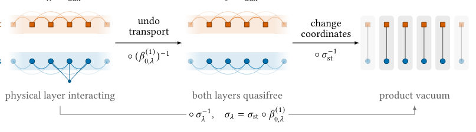
<figcaption class="paper-figure-caption"><b>Fig 2.</b> Figure 2: Construction of product-vacuum coordinates. Circles represent the physical layer and squares the auxiliary layer at the same sites; shaded regions indicate factors of the state. Curves and vertical links indicate correlations; the additional vertex represents correlations in 𝜔𝜆 that need not satisfy Wick’s rule. On the arrows, ◦𝛼denotes 𝜌↦→𝜌◦𝛼. Initially the two layers are independent. Undoing transport returns the physical layer to the quasifree state 𝜔0; composition with 𝜎−1 st then makes the stacked state a product across sites. The composite transformation 𝜎𝜆gives the state identity displayed in Step 1.</figcaption>
</figure>
<figure class="paper-figure-card">
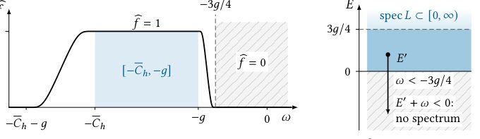
<figcaption class="paper-figure-caption"><b>Fig 3.</b> Figure 3: Two consequences of the choice of filter. In (a), b𝑓is shown for 𝑠𝑓= 2 and 𝐶ℎ= 5𝑔/2: it equals one on the shaded interval [−𝐶ℎ, −𝑔], which contains the free annihilators’ transfer spectrum spec(−|ℎ|), and vanishes for 𝜔≥−3𝑔/4. This gives 𝑐(0) 𝑓,𝑥,𝑗= 𝑐𝑥,𝑗. In (b), let 𝐿≥0 be an implementing Hamiltonian and let 𝐵be bounded. Every transfer selected by the filter lowers the energy by more than 3𝑔/4, so from an initial energy 𝐸′ ∈[0, 3𝑔/4] it would reach a negative final energy, where 𝐿has no spectrum. Thus the filtered operator annihilates this spectral subspace, as proved in Lemma 6.2; no gap in the nonnegative spectrum is used.</figcaption>
</figure>
<figure class="paper-figure-card">
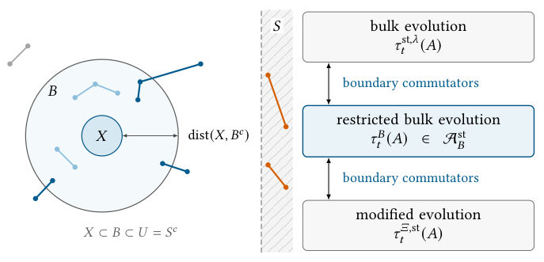
<figcaption class="paper-figure-caption"><b>Fig 4.</b> Figure 4: Comparison with a common restricted dynamics. The stacked bulk dynamics𝜏st,𝜆 𝑡 = 𝜏𝛷𝜆 𝑡 b⊗𝜏aux 𝑡 combines the physical evolution with the auxiliary free evolution. For a defect confined to 𝑆= 𝑈𝑐, the modified dynamics 𝜏𝛯,st 𝑡 replaces 𝛷𝜆by 𝛯= 𝛷𝜆+ 𝛹, where 𝛴(𝛹) ⊂𝑆 (orange terms), and leaves the auxiliary evolution unchanged. For 𝐴∈Ast 𝑋and 𝑋⊂𝐵⊂𝑈,</figcaption>
</figure>
<figure class="paper-figure-card">
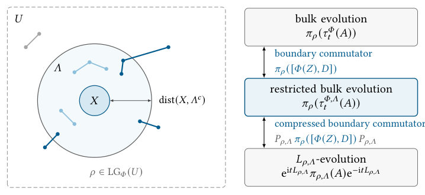
<figcaption class="paper-figure-caption"><b>Fig 5.</b> Figure 5: For a local ground state 𝜌∈LG𝛷(𝑈) and 𝐴∈B𝑋, with 𝑋⊂𝛬⊂𝑈and 𝛬finite, we compare the bulk evolution 𝜏𝛷with conjugation by ei𝑡𝐿𝜌,𝛬in the GNS representation of 𝜌. The positive local energy operator 𝐿𝜌,𝛬is constructed from the local ground-state inequality on H𝜌,𝛬= 𝜋𝜌(B𝛬)𝛺𝜌(Lemma 8.3). Here 𝜋𝜌,𝛬(𝐴) := 𝜋𝜌(𝐴)|H𝜌,𝛬. Both evolutions are compared with the restricted bulk evolution𝜏𝛷,𝛬, generated by the terms supported in 𝛬(light blue). The dark blue terms cross the boundary of 𝛬and contribute to the comparisons, while the gray term supported outside 𝛬does not. The labels at the arrows show the boundary commutators in the two Duhamel comparisons, with 𝐷= 𝜏𝛷,𝛬 𝑠 (𝐴) and 𝑍crossing the boundary...</figcaption>
</figure>
</div>

<p><strong>Summary.</strong> This theoretical paper proves that in gapped fermion systems with weak long-range interactions, the low-energy physics deep inside a region $U$ is robustly determined by the bulk Hamiltonian, even if the interactions outside $U$ are modified. The key result is a quantitative bound showing that local observables decay away from the boundary. This confirms a strong 'local perturbations perturb locally' principle for these quantum systems.</p>
<p><strong>Why it may be interesting.</strong> The rigorous mathematical control over local physics in gapped systems, especially the quantitative nature of the error bounds, is highly relevant for understanding thermalization and boundary effects in quantum many-body systems.</p>
<details>
<summary>Detailed structure</summary>
<p><strong>Main problem.</strong> The paper aims to prove the quantitative local determination of low-energy states in gapped fermion systems subjected to weak, long-range interactions.</p>
<p><strong>Main result.</strong> It establishes that local expectations of low-energy states deep inside a region $U$ are close to the bulk ground state, with the error decaying with the distance to the boundary of $U$, independent of external perturbations.</p>
<p><strong>Method.</strong> The proof combines quasi-adiabatic spectral flow techniques with a newly introduced condition called Local Excitation Detectability (LED).</p>
<p><strong>Model / system.</strong> The system consists of bulk-gapped fermion systems defined on a countable metric space, perturbed by weak, even many-body interactions added to a free Hamiltonian with a spectral gap $g>0$.</p>
<p><strong>Key observables.</strong> Local expectations of low-energy states (excitation energies in $[0, 3g/4]$) and the decay rate of the error in these expectations.</p>
<p><strong>Important parameters / regimes.</strong> The spectral gap $g>0$, the strength of the weak interactions, and the spatial decay rates of the interactions (e.g., polynomial decay $
u$).</p>
<p><strong>Assumptions / limitations.</strong> The validity of ground-state transport and the Local Excitation Detectability (LED) hypothesis are crucial assumptions for the main theorem.</p>
<p><strong>Paper structure.</strong> The argument develops by first establishing the necessary spectral flow and locality properties (Sections 2, 4, 5, 6) before presenting the main quantitative comparison theorem (Theorem 3.1) and proving the uniqueness of the ground state (Corollary 3.2).</p>
</details>
<details>
<summary>Abstract</summary>
<p>We consider bulk-gapped fermion systems whose infinite-volume bulk is obtained by adding sufficiently weak even many-body interactions to a free Hamiltonian with spectral gap $g>0$, allowing polynomial spatial decay of both parts. We prove quantitative local determination of low-energy states: whenever another interaction agrees with the bulk interaction inside a finite or infinite region $U$, with bulk terms crossing its boundary unchanged or removed, all its states with excitation energies in $[0,3g/4]$ have local expectations close to those of the bulk ground state deep inside $U$. The error decays with the distance to the complement of $U$, independently of the interaction terms supported outside $U$ and of the chosen low-energy state.   Quantitative local determination has strong consequences. (i) The bulk interaction has a unique algebraic ground state. (ii) A strong "local perturbations perturb locally" (LPPL) principle holds: arbitrary distant defects change local ground-state expectations only by a spatially decaying error. (iii) Low-energy excitations in finite samples remain localized near the boundary for all times, up to spatially decaying tails, uniformly over arbitrary even boundary terms. (iv) Correlations from deep inside $U$ to outside $U$ are small, with quantitative bounds in terms of spatial separation and distance to $U^c$.   To prove local determination of low-energy states, we combine quasi-adiabatic transport of the free ground state to the interacting bulk ground state with a new condition, local excitation detectability (LED). A companion paper establishes gap stability and constructs the transport for weak interactions, while we prove LED at sufficiently weak coupling. The abstract theorem is nonperturbative and applies whenever the transport and LED hypotheses hold.</p>
</details>
<p><sub><a href="#top">↑ back to top</a></sub></p>

<p><a id="paper-2610.39712"></a></p>
<h3 id="maximum-entropy-ensemble-of-quantum-subsystems-with-a-fixed-average-state"><a href="http://arxiv.org/abs/2610.39712v1">Maximum-Entropy Ensemble of Quantum Subsystems with a Fixed Average State</a></h3>
<p><strong>Authors:</strong> Charlie Shakeshaft, Christopher David White, Harry J. D. Miller<br>
<strong>Type:</strong> theory · <strong>Category:</strong> statistical mechanics · <strong>PDF:</strong> <a href="https://arxiv.org/pdf/2610.39712v1">https://arxiv.org/pdf/2610.39712v1</a><br>
<strong>Analysis basis:</strong> full PDF text, analyzed in chunks
<strong>Topic relevance:</strong> <code>analog quantum simulation</code> <strong>1/5</strong> · <code>non-equilibrium universality</code> <strong>1/5</strong></p>
<div class="figure-strip-hint">↔ Scroll figures horizontally</div>
<div class="paper-figures-scroll">
<figure class="paper-figure-card">
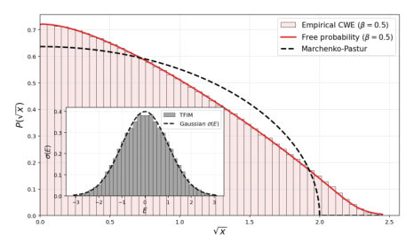
<figcaption class="paper-figure-caption"><b>Fig 1.</b> FIG. 1: CWE level density in terms of √x = √</figcaption>
</figure>
<figure class="paper-figure-card">
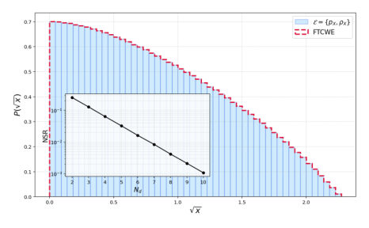
<figcaption class="paper-figure-caption"><b>Fig 2.</b> FIG. 2: Empirical distribution of the rescaled eigenvalue √x = √</figcaption>
</figure>
<figure class="paper-figure-card">
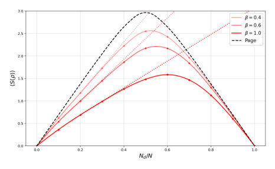
<figcaption class="paper-figure-caption"><b>Fig 3.</b> FIG. 3: Page curves for the POVM-generated ensemble E, with ρ0 the thermal state of the Nd-qubit TFIM. We fix N = Nd + NK = 10, defining NK such that K = 2NK. The dotted lines show the (extensive) von Neumann entropy of the thermal state at each temperature β−1.</figcaption>
</figure>
<figure class="paper-figure-card">
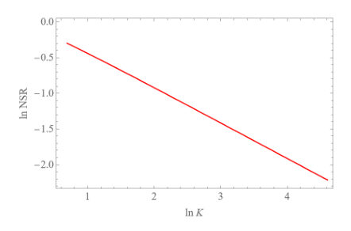
<figcaption class="paper-figure-caption"><b>Fig 4.</b> FIG. 4: Log-log plot of the noise-to-signal ratio √κ2</figcaption>
</figure>
<figure class="paper-figure-card">
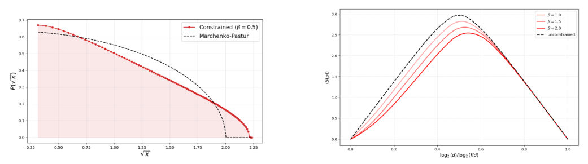
<figcaption class="paper-figure-caption"><b>Fig 5.</b> FIG. 5: (a) Level density of the thermally constrained ensemble in terms of √x for β = 0.5, c = 1. At β = 0, the states are distributed according to the Hilbert-Schmidt measure with a quarter-circular density in √x. (b) Page curves under the thermal constraint for the variable S(ρ) averaged first over the FTCWE and then over the GUE.</figcaption>
</figure>
</div>

<p><strong>Summary.</strong> This work develops a powerful theoretical framework using maximum entropy principles and free probability theory to characterize the statistical ensemble of quantum states constrained by a fixed average. It shows that this ensemble's spectral density converges to the Correlated Wishart Ensemble (CWE). By applying this to the TFIM, the authors derive finite-temperature corrections to random matrix predictions and compute entanglement entropy curves.</p>
<p><strong>Why it may be interesting.</strong> It provides rigorous mathematical tools (free probability) to characterize the statistical properties of quantum states constrained by physical averages, which is crucial for understanding thermalization and entanglement in many-body systems.</p>
<details>
<summary>Detailed structure</summary>
<p><strong>Main problem.</strong> The paper establishes a universal mathematical framework to determine the maximum-entropy distribution of mixed quantum states given a fixed ensemble average state.</p>
<p><strong>Main result.</strong> The eigenvalue density of this maximum-entropy ensemble converges asymptotically to that of the Correlated Wishart Ensemble (CWE), which is calculated using free multiplicative convolution.</p>
<p><strong>Method.</strong> The analysis heavily relies on free probability theory, specifically using the S-transform and free multiplicative convolution to determine the spectral density of the ensemble.</p>
<p><strong>Model / system.</strong> The theory is applied to quantum subsystems, using the Transverse-Field Ising Model (TFIM) with a thermal average state as a concrete physical example.</p>
<p><strong>Key observables.</strong> Eigenvalue density (converging to MP/CWE laws), average entanglement entropy (Page curves), and the Lagrange multiplier matrix M.</p>
<p><strong>Important parameters / regimes.</strong> Large dimensions limit (d, K -&gt; infinity), fixed average state $\langle\rho\rangle = \rho_0$, and the high-temperature regime for TFIM corrections.</p>
<p><strong>Assumptions / limitations.</strong> The equivalence between the maximum-entropy ensemble and the Fixed-Trace CWE is shown in the large-K limit, and the derivation relies on asymptotic equivalence arguments.</p>
<p><strong>Figures summary.</strong> Figures compare the CWE level density, the POVM-generated ensemble eigenvalue distribution, and Page curves derived from both direct sampling and asymptotic free probability predictions for the TFIM.</p>
<p><strong>Paper structure.</strong> The paper progresses from establishing the general mathematical equivalence between the maximum-entropy ensemble and the CWE, deriving the density via free probability tools, and then applying this framework to the TFIM model to calculate entanglement entropy.</p>
</details>
<details>
<summary>Abstract</summary>
<p>The reduced density matrices of Haar-random bipartite states form a fixed-trace version of the Wishart ensemble of random matrices, with an asymptotic eigenvalue density given by the Marchenko--Pastur (MP) law. We establish a similar universal form for the maximum-entropy distribution of mixed states subject to a fixed ensemble average, arguing that its eigenvalue density converges asymptotically to that of the correlated Wishart ensemble (CWE). The density is thus obtained by a free multiplicative convolution formula, which we apply to the transverse-field Ising model (TFIM) with a thermal average state to derive a high-temperature leading-order correction to the MP law. We then consider measurement by a random POVM on the purification of the mixed reference state. We show that the resulting mixed-state ensemble is asymptotically equivalent to the CWE, and provide confirming numerical evidence. We return to the TFIM example to compute the entanglement of the system with the ancilla after measurement, and give finite-temperature Page curves for the average entanglement entropies.</p>
</details>
<p><sub><a href="#top">↑ back to top</a></sub></p>

<p><a id="paper-2610.39943"></a></p>
<h3 id="monte-carlo-simulation-of-mixed-spin-orbit-ordering"><a href="http://arxiv.org/abs/2610.39943v1">Monte Carlo simulation of mixed spin-orbit ordering</a></h3>
<p><strong>Authors:</strong> Yu. D. Panov, V. A. Ulitko<br>
<strong>Type:</strong> theory · <strong>Category:</strong> strongly correlated electrons · <strong>PDF:</strong> <a href="https://arxiv.org/pdf/2610.39943v1">https://arxiv.org/pdf/2610.39943v1</a><br>
<strong>Analysis basis:</strong> full PDF text, analyzed in chunks
<strong>Topic relevance:</strong> <code>analog quantum simulation</code> <strong>1/5</strong> · <code>methods for driven-dissipative</code> <strong>1/5</strong></p>
<div class="figure-strip-hint">↔ Scroll figures horizontally</div>
<div class="paper-figures-scroll">
<figure class="paper-figure-card">
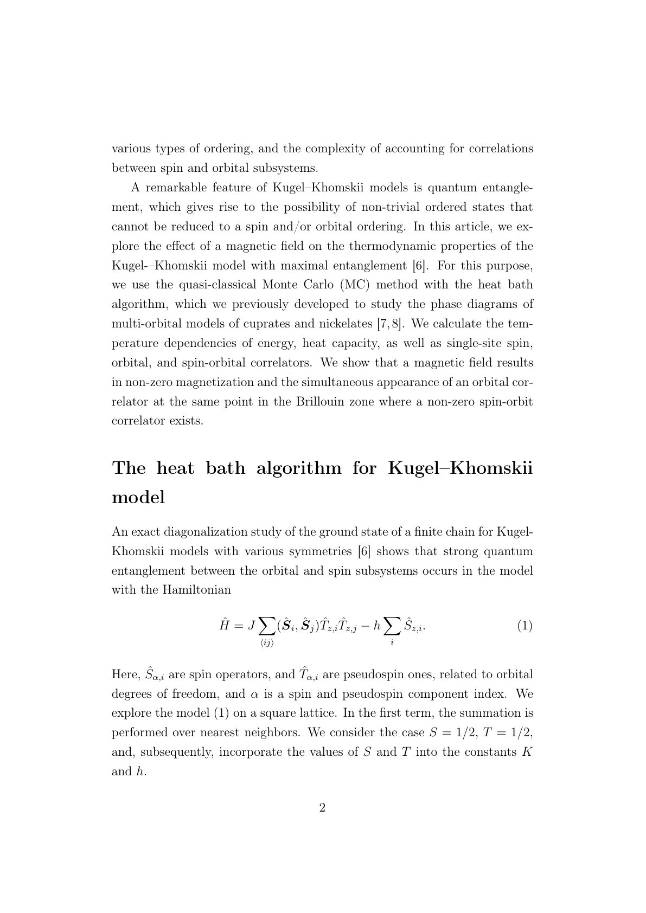
<figcaption class="paper-figure-caption"><b>Fig 1.</b> Low-resolution page preview, page 2</figcaption>
</figure>
<figure class="paper-figure-card">
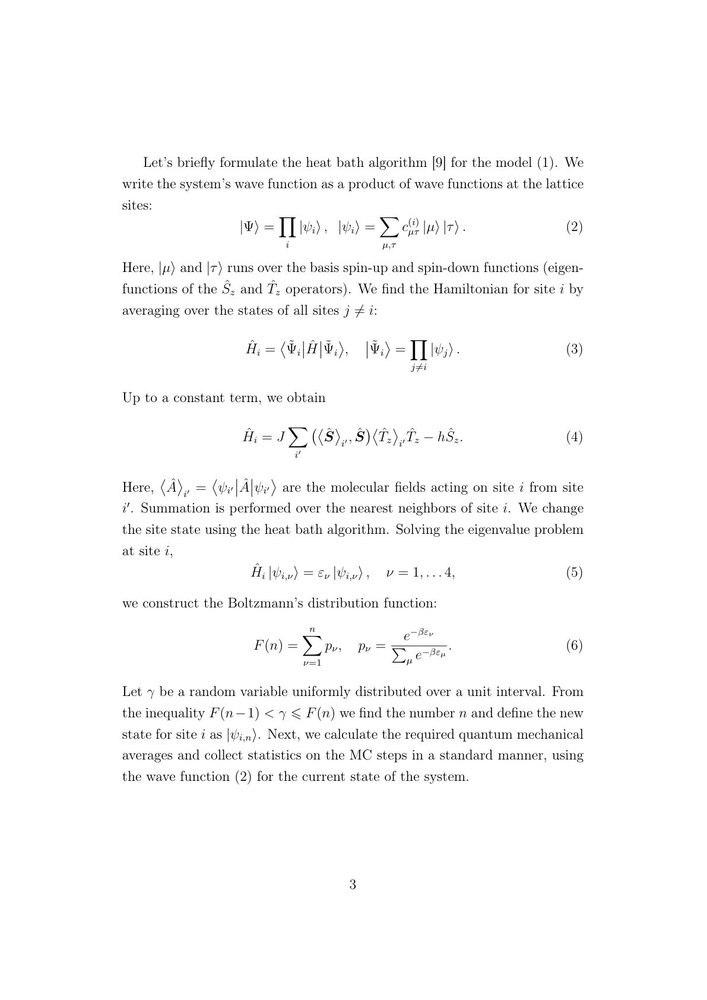
<figcaption class="paper-figure-caption"><b>Fig 2.</b> Low-resolution page preview, page 3</figcaption>
</figure>
<figure class="paper-figure-card">
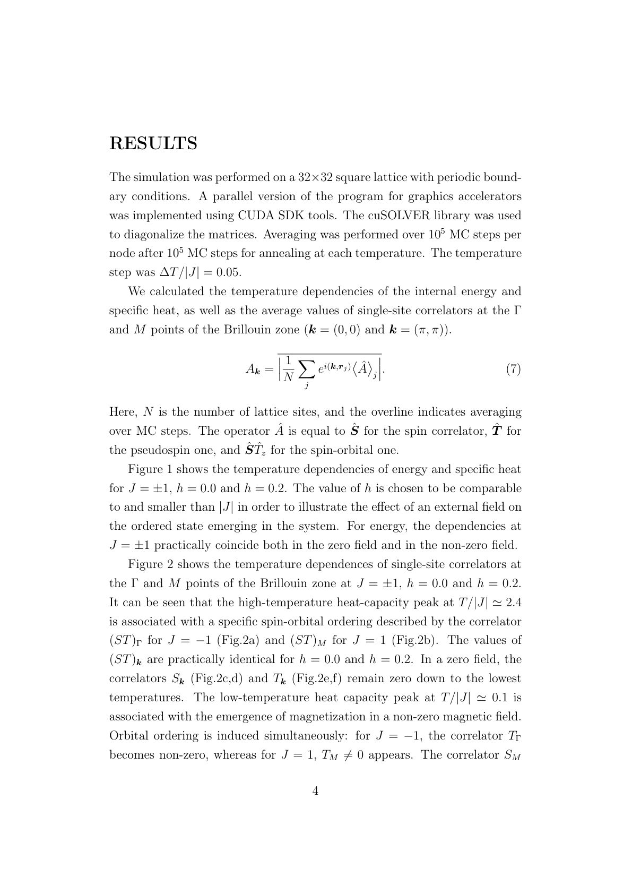
<figcaption class="paper-figure-caption"><b>Fig 3.</b> Low-resolution page preview, page 4</figcaption>
</figure>
<figure class="paper-figure-card">
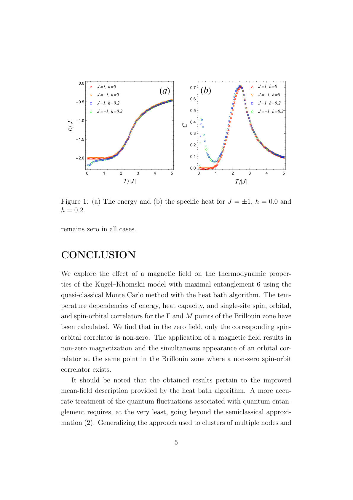
<figcaption class="paper-figure-caption"><b>Fig 4.</b> Low-resolution page preview, page 5</figcaption>
</figure>
<figure class="paper-figure-card">
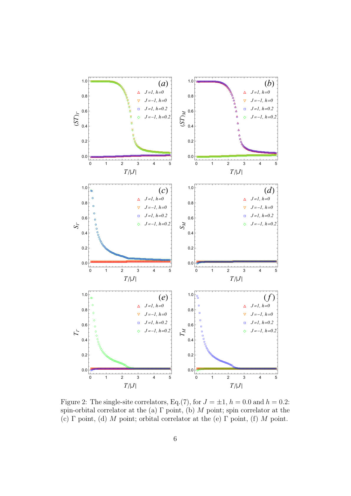
<figcaption class="paper-figure-caption"><b>Fig 5.</b> Low-resolution page preview, page 6</figcaption>
</figure>
</div>

<p><strong>Summary.</strong> This paper uses Monte Carlo simulations on the Kugel-Khomskii model to study the effect of a magnetic field on spin-orbital ordering. The key finding is that the magnetic field not only induces magnetization but also drives the appearance of orbital ordering concurrently with existing spin-orbit correlations. This work provides insights into the complex interplay of spin and orbital physics in correlated electron systems.</p>
<p><strong>Why it may be interesting.</strong> The interplay between magnetic fields, spin, and orbital degrees of freedom in strongly correlated materials is central to understanding high-temperature superconductivity and exotic magnetic phases, making this relevant to many-body dynamics.</p>
<details>
<summary>Detailed structure</summary>
<p><strong>Main problem.</strong> The study investigates how an external magnetic field affects the thermodynamic properties and ordering mechanisms within the Kugel-Khomskii model.</p>
<p><strong>Main result.</strong> Applying a magnetic field induces non-zero magnetization and causes the simultaneous emergence of orbital ordering at the same Brillouin zone points where spin-orbit correlations are already present.</p>
<p><strong>Method.</strong> The research employs the quasi-classical Monte Carlo (MC) method utilizing the heat bath algorithm to simulate the system's thermal behavior.</p>
<p><strong>Model / system.</strong> The system is modeled by the Kugel-Khomskii Hamiltonian, which describes strongly correlated compounds, incorporating both spin ($\hat{S}$) and orbital ($\hat{T}$) degrees of freedom on a square lattice.</p>
<p><strong>Key observables.</strong> Single-site spin, orbital, and spin-orbital correlators, along with energy and heat capacity as functions of temperature.</p>
<p><strong>Important parameters / regimes.</strong> The external magnetic field strength ($h$) and the exchange coupling constant ($J$) are the primary varied parameters.</p>
<p><strong>Assumptions / limitations.</strong> The analysis relies on the heat bath algorithm, which provides an improved mean-field description, and acknowledges that fully accounting for quantum entanglement requires going beyond the semiclassical approximation.</p>
<p><strong>Figures summary.</strong> Figure 1 shows temperature dependencies of energy and specific heat for varying magnetic fields. Figure 2 illustrates the temperature dependence of single-site correlators (spin-orbital, spin, orbital) at the $\Gamma$ and M points for different field strengths.</p>
<p><strong>Paper structure.</strong> The paper systematically analyzes the temperature dependence of various correlators and thermodynamic quantities (energy, heat capacity) by comparing zero-field ($h=0$) and finite-field ($h 
eq 0$) scenarios across different points in the Brillouin zone.</p>
</details>
<details>
<summary>Abstract</summary>
<p>The effect of a magnetic field on the thermodynamic properties of the Kugel-Khomskii model with maximal entanglement using the quasi-classical Monte Carlo method with the heat bath algorithm. The temperature dependencies of single-site correlators show that the application of a magnetic field results in non-zero magnetization and the simultaneous appearance of an orbital ordering at the same point in the Brillouin zone where a non-zero spin-orbit correlator exists.</p>
</details>
<p><sub><a href="#top">↑ back to top</a></sub></p>

<p><a id="paper-2610.39784"></a></p>
<h3 id="non-asymptotic-bounds-via-the-nussbaum-szkoa-mapping-for-quantum-hypothesis-testing"><a href="http://arxiv.org/abs/2610.39784v1">Non-Asymptotic Bounds via the Nussbaum-Szkoła Mapping for Quantum Hypothesis Testing</a></h3>
<p><strong>Authors:</strong> Jorge Lizarribar-Carrillo, Gonzalo Vazquez-Vilar, Tobias Koch<br>
<strong>Type:</strong> theory · <strong>Category:</strong> quantum information and computing · <strong>PDF:</strong> <a href="https://arxiv.org/pdf/2610.39784v1">https://arxiv.org/pdf/2610.39784v1</a><br>
<strong>Analysis basis:</strong> full PDF text, analyzed in chunks
<strong>Topic relevance:</strong> <code>Keldysh / 2PI / non-Gaussian methods</code> <strong>1/5</strong> · <code>quantum measurements</code> <strong>1/5</strong></p>
<div class="figure-strip-hint">↔ Scroll figures horizontally</div>
<div class="paper-figures-scroll">
<figure class="paper-figure-card">
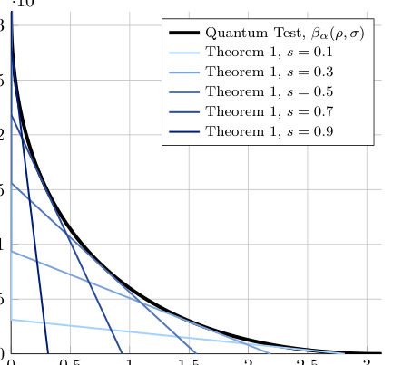
<figcaption class="paper-figure-caption"><b>Fig 1.</b> Fig. 1. Quantum error trade-off compared to the lower bound from Theorem 1 for a hypothesis test between the states |0⟩⟨0|⊗5 and |+⟩⟨+|⊗5.</figcaption>
</figure>
<figure class="paper-figure-card">
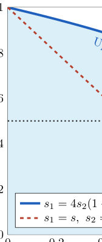
<figcaption class="paper-figure-caption"><b>Fig 2.</b> Fig. 2. Illustration of the region R (40), shaded in the figure.</figcaption>
</figure>
<figure class="paper-figure-card">
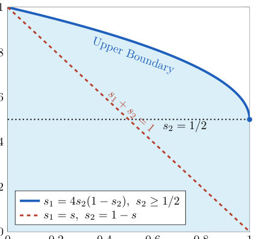
<figcaption class="paper-figure-caption"><b>Fig 3.</b> Figure 2 shows the region R defined in (40). Setting s1 = s2 = s in (39) yields the multiplicative bound</figcaption>
</figure>
<figure class="paper-figure-card">
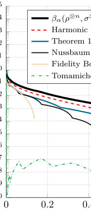
<figcaption class="paper-figure-caption"><b>Fig 4.</b> Fig. 3. Comparison of converse bounds for the 5-fold tensor products ρ⊗5 and σ⊗5 of the states in (106).</figcaption>
</figure>
<figure class="paper-figure-card">
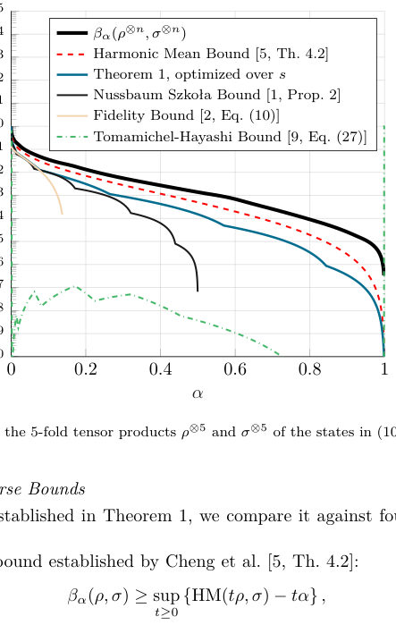
<figcaption class="paper-figure-caption"><b>Fig 5.</b> Figure 3 compares the resulting converse bounds with the true quantum error trade-off function βα(ρ⊗n, σ⊗n) for n = 5 and the mixed states ρ = 0.5 0.4 0.4 0.5</figcaption>
</figure>
</div>

<p><strong>Summary.</strong> This paper develops new mathematical bounds for the quantum error trade-off function in quantum hypothesis testing using the Nussbaum-Szkoła mapping. By unifying the analysis across different deviation regimes, the authors provide bounds that are theoretically tighter and more applicable in the non-asymptotic regime than previous methods. This advances the fundamental understanding of state discrimination limits in quantum information theory.</p>
<p><strong>Why it may be interesting.</strong> The work provides powerful, non-asymptotic tools for quantifying fundamental limits in quantum communication and estimation, which are crucial for designing robust quantum protocols.</p>
<details>
<summary>Detailed structure</summary>
<p><strong>Main problem.</strong> The paper aims to establish novel, unified, and non-asymptotic lower and upper bounds for the quantum error trade-off function in asymmetric quantum hypothesis testing.</p>
<p><strong>Main result.</strong> The proposed bounds, derived via the Nussbaum-Szkoła mapping, provide a unified recovery of converse and achievability results across all major asymptotic regimes, showing improved tightness over existing methods.</p>
<p><strong>Method.</strong> The analysis utilizes the Nussbaum-Szkoła mapping to connect the quantum error trade-off to a classical counterpart, deriving bounds through variational formulations and optimization techniques.</p>
<p><strong>Model / system.</strong> The physical system is the discrimination between two quantum states, $
ho$ and $\sigma$, acting on a finite-dimensional Hilbert space $H$. The test is binary, characterized by Type-I and Type-II error probabilities.</p>
<p><strong>Key observables.</strong> The quantum error trade-off function, $eta_\alpha(
ho, \sigma)$, and the corresponding classical error trade-off $\alpha(P, Q)$.</p>
<p><strong>Important parameters / regimes.</strong> The error parameters $\alpha$ (Type-I error) and the blocklength/deviation parameter $n$ (in large-deviation analysis).</p>
<p><strong>Assumptions / limitations.</strong> The derivation relies on the variational formulation of the trade-off function and the ability to map quantum traces to classical minimums via the Nussbaum-Szkoła framework.</p>
<p><strong>Figures summary.</strong> Figures compare various converse and achievability bounds (e.g., for $
ho^{\otimes 5}$ and $\sigma^{\otimes 5}$) across different state types (Mixed-Mixed and Pure-Mixed), demonstrating the superior tightness of the proposed bounds.</p>
<p><strong>Paper structure.</strong> The paper progresses by first defining the problem and variational formulation, then introducing the Nussbaum-Szkoła mapping, deriving the novel lower and upper bounds (Theorems 1, 2, 3), and finally analyzing their asymptotic behavior and comparing them rigorously to established literature bounds.</p>
</details>
<details>
<summary>Abstract</summary>
<p>Quantum hypothesis testing concerns the discrimination between quantum states. This paper introduces novel lower and upper bounds for asymmetric quantum hypothesis testing based on the Nussbaum-Szkoła mapping. Together, these bounds provide a unified recovery of both converse and achievability results across all major asymptotic regimes, including large-, moderate-, and small-deviations. Unlike existing bounds, which either rely on technically involved information-spectrum arguments or suffer from fixed prefactors and limited applicability in the non-asymptotic regime, the proposed bounds arise from a unified framework and enable, in some cases, the direct use of classical results. It is further demonstrated that these bounds provide accurate approximations to the optimal quantum error trade-off function at small blocklengths. Numerical comparisons with existing bounds, including those based on fidelity and information spectrum methods, highlight their improved tightness.</p>
</details>
<p><sub><a href="#top">↑ back to top</a></sub></p>

<p><a id="paper-2610.40515"></a></p>
<h3 id="single-temperature-ranked-greedy-cluster-exchange-for-max-cut-on-two-dimensional-tori"><a href="http://arxiv.org/abs/2610.40515v1">Single-Temperature Ranked Greedy Cluster Exchange for Max-Cut on Two-Dimensional Tori</a></h3>
<p><strong>Authors:</strong> Hao Geng, Nan Su, Gabriele Cavallaro<br>
<strong>Type:</strong> both · <strong>Category:</strong> disordered systems and neural networks · <strong>PDF:</strong> <a href="https://arxiv.org/pdf/2610.40515v1">https://arxiv.org/pdf/2610.40515v1</a><br>
<strong>Analysis basis:</strong> full PDF text, analyzed in chunks
<strong>Topic relevance:</strong> <code>analog quantum simulation</code> <strong>1/5</strong> · <code>methods for driven-dissipative</code> <strong>1/5</strong></p>
<div class="figure-strip-hint">↔ Scroll figures horizontally</div>
<div class="paper-figures-scroll">
<figure class="paper-figure-card">
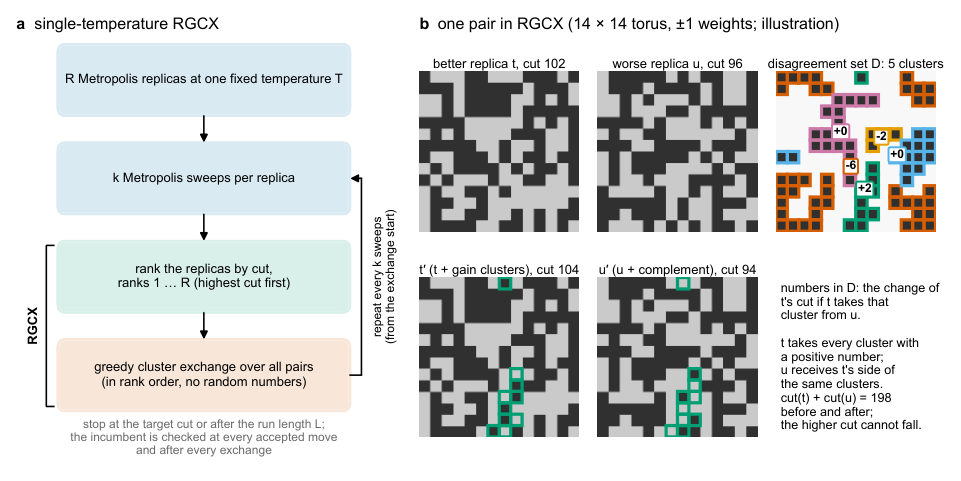
<figcaption class="paper-figure-caption"><b>Fig 1.</b> Figure 1: Single-temperature RGCX. (a) One run: Metropolis sweeps at one temperature and, every k sweeps, an exchange call that ranks the replicas by cut and processes all pairs. (b) One pair on a 14 × 14 torus with ±1 weights, as an illustration. The disagreement set D splits into five clusters, each marked with the change of the better replica’s cut if it takes that cluster from the worse replica. The better replica takes every cluster with a positive change, the worse replica receives the complement, and the summed cut stays 198.</figcaption>
</figure>
<figure class="paper-figure-card">
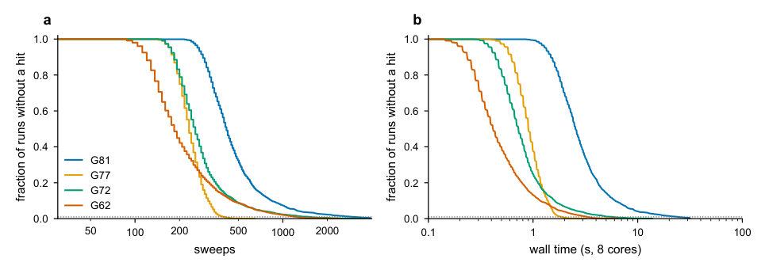
<figcaption class="paper-figure-caption"><b>Fig 2.</b> Figure 2: First hits on the four tori of Table 1, 2,048 runs each. (a) Fraction of runs that have not reached the optimum, against sweeps. (b) The same against wall time on the 8-core desktop computer. The dotted line in (a) and (b) marks 1 % of runs without a hit.</figcaption>
</figure>
<figure class="paper-figure-card">

<figcaption class="paper-figure-caption"><b>Fig 3.</b> Figure 3: Ablations on G81 (a) and G72 (b), 256 paired runs per arm. Each row specifies a modification of single-temperature RGCX. Dots: ratio of the renewal TTS99 in wall seconds, arm over our paper’s setting, with 95 % interval. Vertical ticks: the same ratio in replica-sweeps. Marker colors indicate the decision in the corresponding unit: circles for wall time and vertical ticks for replica-sweeps. The shaded band is the equivalence margin [2/3, 1.5]. The number of the arm’s runs that reached the optimum is given on the right, and arms in which none did within 10,000 sweeps are marked “no hit”. Equivalence is declared when the 90 % interval of the ratio lies entirely within [2/3, 1.5]...</figcaption>
</figure>
<figure class="paper-figure-card">

<figcaption class="paper-figure-caption"><b>Fig 4.</b> Figure 4: G72 on the nRF52840 board at 64 MHz. (a) Fraction of runs without a hit versus board time, using modeled times from 512 host runs (line) and measurements from 8 board runs (dots), with the median, the 90th percentile and the fixed-length TTS99. The model curve is truncated at the time corresponding to the 1,000-sweep run limit. (b) Measured board time against the model’s prediction for the 8 board runs. The dashed line is equality.</figcaption>
</figure>
</div>

<p><strong>Summary.</strong> This paper introduces a novel optimization heuristic called single-temperature Ranked Greedy Cluster Exchange (RGCX) for solving the Max-Cut problem on 2D toroidal lattices. By combining deterministic cluster exchanges with fixed-temperature Monte Carlo dynamics, the method significantly accelerates the search for ground states in Ising spin glasses. The results demonstrate RGCX's efficiency, establishing it as a powerful population-based tool for complex optimization problems in condensed matter physics.</p>
<p><strong>Why it may be interesting.</strong> While the focus is classical optimization, the underlying physics—ground-state search in spin glasses—is central to understanding complex energy landscapes relevant to quantum many-body physics and optimization problems in quantum computing.</p>
<details>
<summary>Detailed structure</summary>
<p><strong>Main problem.</strong> The paper addresses the challenging ground-state search problem for the Max-Cut problem, which is equivalent to finding the ground state of the zero-field Ising spin glass on 2D toroidal lattices.</p>
<p><strong>Main result.</strong> The proposed single-temperature Ranked Greedy Cluster Exchange (RGCX) method achieved fast convergence, reaching the best known cuts and certified optima on large toroidal graphs with significantly faster estimated runtimes compared to existing state-of-the-art methods.</p>
<p><strong>Method.</strong> The core method is single-temperature RGCX, which combines deterministic cluster exchanges between ranked replicas with fixed-temperature Metropolis Monte Carlo sweeps.</p>
<p><strong>Model / system.</strong> The system is a two-dimensional lattice arranged on a torus, modeled by the Max-Cut problem or the zero-field Edwards–Anderson Ising model with $\pm 1$ edge weights. The state is defined by a binary configuration vector $x \in \{0, 1\}^N$.</p>
<p><strong>Key observables.</strong> The primary observable is the 'Cut' value (the total weight of edges crossing the partition). Performance is measured by Time-to-Solution ($   ext{TTS}99$) to reach the certified optimum.</p>
<p><strong>Important parameters / regimes.</strong> Key parameters include the number of replicas ($R=96$), the fixed temperature ($T=0.23$), and the exchange interval ($k=8$ sweeps). The lattice size $N$ reaches 20,000 spins.</p>
<p><strong>Assumptions / limitations.</strong> The RGCX operation assumes the pair exchange conserves the sum of the two replicas' cuts, $  ext{cut}(t') +  ext{cut}(u') =  ext{cut}(t) +   ext{cut}(u)$.</p>
<p><strong>Figures summary.</strong> Figures illustrate the single-temperature RGCX process on a torus, detailing cluster exchanges based on positive gain ($\Delta_\ell > 0$). Tables compare the $ ext{TTS}99$ of RGCX against other solvers (e.g., Cosm v2) across various toroidal graphs.</p>
<p><strong>Paper structure.</strong> The paper introduces the problem (Max-Cut/Ising spin glass), details the RGCX operator and its theoretical properties (cut conservation), presents the combined simulation algorithm (Metropolis sweeps interspersed with RGCX calls), and concludes with extensive benchmarking against state-of-the-art methods on various graph sizes.</p>
</details>
<details>
<summary>Abstract</summary>
<p>Ground-state search in two-dimensional Ising spin glasses on large toroidal lattices remains challenging for local-update heuristics because rugged energy barriers impede relaxation across metastable states. Equivalent to zero-field toroidal Max-Cut problems, these spin-glass instances also serve as standard benchmarks for optimization heuristics. Many Monte Carlo approaches combine single-spin flips or cluster moves with temperature ladders or annealing schedules, yet even with tuned parameters, rarely achieve rapid, reliable ground-state convergence at scale. Here, we address the need for faster ground-state search through cooperation between replicas. We introduce ranked greedy cluster exchange (RGCX) and combine it with fixed-temperature Metropolis sweeps to form single-temperature RGCX. Replicas are ranked by cut to determine the pair-processing order. Each pair deterministically exchanges every disagreement cluster that raises the better replica's cut, retaining the complement and conserving the pair's summed cut. On the 20,000-spin Gset instance G81, the estimated runtime to reach the certified optimum with 99% success probability (TTS99) was 12.1 s on an 8-core desktop computer. With the same population size, exchange interval and temperature, the method reached the best known cuts on all 17 toroidal Gset graphs, including 9 certified optima. These findings advance ground-state search on large two-dimensional tori by establishing single-temperature RGCX as an efficient population-based method that combines ranked greedy cluster exchange with fixed-temperature Metropolis dynamics.</p>
</details>
<p><sub><a href="#top">↑ back to top</a></sub></p>

<p><a id="paper-2610.40428"></a></p>
<h3 id="teleported-free-energy-simulations"><a href="http://arxiv.org/abs/2610.40428v1">Teleported free energy simulations</a></h3>
<p><strong>Authors:</strong> Davide Carbone<br>
<strong>Type:</strong> theory · <strong>Category:</strong> statistical mechanics · <strong>PDF:</strong> <a href="https://arxiv.org/pdf/2610.40428v1">https://arxiv.org/pdf/2610.40428v1</a><br>
<strong>Analysis basis:</strong> full PDF text, analyzed in chunks
<strong>Topic relevance:</strong> <code>methods for driven-dissipative</code> <strong>1/5</strong> · <code>quantum measurements</code> <strong>1/5</strong></p>
<div class="figure-strip-hint">↔ Scroll figures horizontally</div>
<div class="paper-figures-scroll">
<figure class="paper-figure-card">

<figcaption class="paper-figure-caption"><b>Fig 1.</b> FIG. 1. Tilted double well, Eq. (22), with h = 2, at λ = 0 (solid) and λ = 1 (dashed), with the corresponding equilib- rium distributions (shaded). The weight of the right well grows from 1.3 × 10−5 to 1/2; its distribution at λ = 0 is shown magnified 105 times. The tilt also shifts the minima slightly, which the escort field compensates. The arrow indi- cates teleportation.</figcaption>
</figure>
<figure class="paper-figure-card">

<figcaption class="paper-figure-caption"><b>Fig 2.</b> FIG. 2. (a) Free energy estimates versus switching time τ for the model of Fig. 1 (h = 2, N = 107 trajectories per point): Eq. (1) (open circles), escorted simulations (open squares), and escorted simulations with teleportation (filled circles); dashed line, exact ∆F. Error bars are standard errors over 20 batches; for teleported simulations they are smaller than the symbols. (b) Measured relative variance of e−βW versus tilt h at τ = 0.2, with N = 106, 107, and 3 × 107 trajectories for h = 1.5, 2, and 2.25, so that about 102 trajectories start in the right well; dotted line, the floor of Eq. (14), valid for any escort.</figcaption>
</figure>
<figure class="paper-figure-card">

<figcaption class="paper-figure-caption"><b>Fig 3.</b> Figure 2(a) shows the estimates for h = 2, with N = 107 trajectories per point for all three methods. About a hundred of them, NπR(0) ≃130, start in the right well, so the rare events that matter are sampled and all estimates are correct on average. The difference lies in the fluctuations. Without teleports the error bars are about 0.04 and do not shrink with τ: the measured relative variance of e−βW is 2 × 104 at every switching time, with and without the escort, right on the floor of Eq. (14). Slower switching does not help, because the barrier is never crossed, and no escort can help either. With teleports the variance drops to between 0.3, at the shortest τ, and 8 × 10−3, and the error...</figcaption>
</figure>
</div>

<p><strong>Summary.</strong> This paper introduces 'teleported free energy simulations' to overcome limitations in calculating free energy differences in systems with separated metastable states. By augmenting continuous flow dynamics with controlled probability jumps (teleportation), the method eliminates the variance floor found in standard escort simulations. This provides a highly accurate and theoretically justified tool for non-equilibrium statistical mechanics.</p>
<p><strong>Why it may be interesting.</strong> This work provides a powerful, theoretically grounded extension to advanced sampling techniques, offering a robust way to calculate free energy differences in complex, multi-basin systems where standard methods fail due to rare events.</p>
<details>
<summary>Detailed structure</summary>
<p><strong>Main problem.</strong> The paper addresses the challenge of accurately estimating free energy differences ($\Delta F$) between two equilibrium states using non-equilibrium simulation methods, especially when the system involves metastable basins separated by high barriers.</p>
<p><strong>Main result.</strong> The introduction of 'teleportation' (jumps) to the standard 'escorted' flow field successfully removes the variance floor inherent in continuous flow methods, allowing for accurate $\Delta F$ estimation even when probability must move between basins.</p>
<p><strong>Method.</strong> The authors combine continuous flow dynamics (escorting) with discrete jump processes (teleportation) to modify the underlying master equation governing the phase-space density evolution.</p>
<p><strong>Model / system.</strong> The analysis uses a general Hamiltonian $H(z, \lambda)$ describing a system with metastable basins. Specific examples include a two-basin model and the tilted double well potential, where the parameter $\lambda$ drives the system between states.</p>
<p><strong>Key observables.</strong> Free energy difference ($\Delta F$), dissipated work ($\langle W 
angle - \Delta F$), variance of the work estimator, and the mean number of inter-basin jumps ($\langle n 
angle$).</p>
<p><strong>Important parameters / regimes.</strong> The simulation time $   au$, the temperature parameter $eta$, and the relative weights/populations of the metastable basins ($\pi_A, \pi_B$).</p>
<p><strong>Assumptions / limitations.</strong> The standard escort method fails when the driving parameter $\lambda$ changes the relative populations of metastable states; the method assumes that the required jump activity is governed by the total variation distance between basin populations.</p>
<p><strong>Figures summary.</strong> Figures compare free energy estimates using plain, escorted, and teleported dynamics, demonstrating that teleportation significantly reduces the variance floor, especially in the double well potential.</p>
<p><strong>Paper structure.</strong> The paper first establishes the non-equilibrium work relation and the failure of continuous escorting when basin populations change. It then introduces teleportation to lift the variance floor, deriving the zero-dissipation condition and the minimal required jump rate. Finally, it illustrates these concepts using solvable models.</p>
</details>
<details>
<summary>Abstract</summary>
<p>Escorted free energy simulations reduce dissipation with a flow field that follows the equilibrium distribution. A continuous flow, however, cannot transfer probability between metastable basins. We show that any escort then faces a variance floor set by the change in basin weights, and lift it by adding teleportation: jumps at a rate proportional to the driving rate. We derive the corresponding nonequilibrium identity, the zero-dissipation condition, and the minimal number of jumps it requires, and illustrate the gain on an exactly solvable model and a tilted double well.</p>
</details>
<p><sub><a href="#top">↑ back to top</a></sub></p>

<p><a id="paper-2610.39091"></a></p>
<h3 id="time-switching-energy-harvesting-quantum-relay-assisted-fso-communication-with-displaced-squeezed-signaling"><a href="http://arxiv.org/abs/2610.39091v1">Time-Switching Energy-Harvesting Quantum Relay-Assisted FSO Communication with Displaced Squeezed Signaling</a></h3>
<p><strong>Authors:</strong> Nizar Khalfet, Francisco A. Monteiro, Ioannis Krikidis<br>
<strong>Type:</strong> theory · <strong>Category:</strong> quantum information and computing · <strong>PDF:</strong> <a href="https://arxiv.org/pdf/2610.39091v1">https://arxiv.org/pdf/2610.39091v1</a><br>
<strong>Analysis basis:</strong> full PDF text, analyzed in chunks
<strong>Topic relevance:</strong> <code>interference shaping light</code> <strong>1/5</strong> · <code>quantum measurements</code> <strong>1/5</strong></p>
<div class="figure-strip-hint">↔ Scroll figures horizontally</div>
<div class="paper-figures-scroll">
<figure class="paper-figure-card">

<figcaption class="paper-figure-caption"><b>Fig 1.</b> Fig. 1: System model of the proposed TS-DF quantum relay-assisted FSO link. Each block is split into an EH phase of duration t and two forwarding slots of duration (1 −t)/2 each (half-duplex, Remark 1); each hop is a pure-loss channel with truncated Gamma-Gamma transmissivity ηi.</figcaption>
</figure>
<figure class="paper-figure-card">

<figcaption class="paper-figure-caption"><b>Fig 2.</b> Fig. 2: Validation of Proposition 1: conditional Helstrom error P H e,2(η) versus the transmissivity η at N2 = 3.33, with the bounds (48) and the CP benchmark.</figcaption>
</figure>
<figure class="paper-figure-card">

<figcaption class="paper-figure-caption"><b>Fig 3.</b> Fig. 3: Loss-aware allocation. (a) Second-hop error ¯P H e,2(t, ζ) versus ζ: exact Helstrom error (solid), CP benchmark (dash-dotted), Monte Carlo (circles), loss-aware optimum ζ⋆(t) (stars) and lossless rule ζL (triangles). (b) Relative change with respect to coherent relaying (ζ = 0).</figcaption>
</figure>
<figure class="paper-figure-card">

<figcaption class="paper-figure-caption"><b>Fig 4.</b> Fig. 5: Second-hop error normalized by the coherent asymptotic law ¯K(4hN2)−g2 (h = 0.3). Coherent and optimized DSS relaying tend to 1 (Theorem 1(a)), whereas the CP benchmark follows (N2+1)−g2 (Corollary 1). DSS points are exact up to N2 = 100; the coherent and CP curves are obtained from the series of Proposition 3 up to N2 = 105.</figcaption>
</figure>
<figure class="paper-figure-card">

<figcaption class="paper-figure-caption"><b>Fig 5.</b> Fig. 4: (a) Loss-aware optimal squeezing fraction ζ⋆versus N2 for three link factors, compared with the lossless rule. (b) Relative reduction of the second-hop error achieved by optimized squeezing, 1 −¯P ⋆ e,2/ ¯P coh e,2 , versus N2 for hℓ,2 = 0.6 and three turbulence strengths; for σ2 R ∈{0.1, 0.3}, (α2, β2) follow from (7).</figcaption>
</figure>
</div>

<p><strong>Summary.</strong> This work analyzes quantum communication over free-space optical links incorporating energy harvesting and atmospheric turbulence. It develops rigorous bounds for the achievable rate using displaced squeezed signaling and time-switching protocols. The findings demonstrate that quantum resources like squeezing offer tangible benefits even under realistic, energy-constrained, and lossy channel conditions.</p>
<p><strong>Why it may be interesting.</strong> It combines quantum communication theory with realistic physical constraints (energy harvesting and atmospheric loss), providing advanced analytical tools for quantum networking in challenging environments.</p>
<details>
<summary>Detailed structure</summary>
<p><strong>Main problem.</strong> The paper develops a unified analytical framework for quantum relay-assisted Free-Space Optical (FSO) communication that must account for energy sustainability constraints, non-classical signaling, and atmospheric turbulence.</p>
<p><strong>Main result.</strong> It derives performance metrics for time-switching energy-harvesting quantum relaying, proving that optimized squeezing provides a finite-photon-budget benefit and that the achievable throughput approaches an analytical upper bound as the photon budget increases.</p>
<p><strong>Method.</strong> The analysis uses Helstrom-optimal detection theory, modeling the communication hops as pure-loss bosonic channels governed by a truncated Gamma-Gamma random transmissivity.</p>
<p><strong>Model / system.</strong> The system is a quantum relay-assisted FSO link utilizing a time-switching decode-and-forward protocol. The relay is powered by energy harvested from the environment, and the quantum signal uses Displaced Squeezed Signaling (DSS).</p>
<p><strong>Key observables.</strong> Average error (Helstrom error), achievable throughput, and the preservation of diversity order.</p>
<p><strong>Important parameters / regimes.</strong> Time-switching fraction $t$, energy harvesting efficiency $\eta_{	ext{pv}}$, and the degree of squeezing.</p>
<p><strong>Assumptions / limitations.</strong> The turbulence-induced loss is modeled by a truncated Gamma-Gamma law, and the relay operates under an instantaneous energy-causality constraint.</p>
<p><strong>Figures summary.</strong> Not specified (The notes do not describe figures, only mathematical derivations and results).</p>
<p><strong>Paper structure.</strong> The paper introduces the system model (EH, DSS, FSO hops), formulates the detection problem using Helstrom bounds, and presents the performance analysis by deriving closed-form fidelities and proving asymptotic bounds.</p>
</details>
<details>
<summary>Abstract</summary>
<p>This paper investigates a quantum relay-assisted free-space optical (FSO) communication system in which a decode-and-forward relay is powered by time-switching optical energy harvesting and forwards the decoded information using displaced squeezed signaling (DSS). To obtain a physically con sistent description of turbulence-induced loss for non-classical signaling, each hop is modeled as a pure-loss bosonic chan nel whose random transmissivity follows a truncated Gamma Gamma law, i.e., the Gamma-Gamma irradiance conditioned on the physically admissible range of a transmittance. Under this channel, coherent states remain pure, whereas squeezed states are mapped to mixed Gaussian states. Under Helstrom-optimal detection, the average error of the coherent hop is derived in exact Laplace-series form. For the DSS hop, we derive the output states, a closed-form Gaussian fidelity with rigorous two sided bounds on the Helstrom error, and prove the existence of a loss-aware optimal photon partition. Furthermore, we prove that optimized squeezing preserves both the turbulence-induced diversity order and the leading asymptotic constant of coherent relaying, so that its benefit is a finite-photon-budget effect, and that an interior throughput-optimal harvesting fraction exists. A covariance-preserving benchmark with an exact series representation yields an analytical upper bound on the achievable throughput whose absolute gap vanishes as the relay photon budget grows. Numerical results based on the exact mixed-state Helstrom error quantify the benefit of squeezing and the regime in which it is useful.</p>
</details>
<p><sub><a href="#top">↑ back to top</a></sub></p>

<p><a id="paper-2610.39136"></a></p>
<h3 id="beyond-energy-bounds-comparing-schrodinger-eigenstates"><a href="http://arxiv.org/abs/2610.39136v1">Beyond energy bounds: comparing Schrödinger eigenstates</a></h3>
<p><strong>Authors:</strong> Xiao-Ke Wang, Han Jia, Shengjun Wu, Zeng-Bing Chen<br>
<strong>Type:</strong> theory · <strong>Category:</strong> other · <strong>PDF:</strong> <a href="https://arxiv.org/pdf/2610.39136v1">https://arxiv.org/pdf/2610.39136v1</a><br>
<strong>Analysis basis:</strong> full PDF text, analyzed in chunks
<strong>Topic relevance:</strong> <code>analog quantum simulation</code> <strong>1/5</strong></p>
<div class="figure-strip-hint">↔ Scroll figures horizontally</div>
<div class="paper-figures-scroll">
<figure class="paper-figure-card">

<figcaption class="paper-figure-caption"><b>Fig 1.</b> Figure 1: Ground-state distributions and excited-state nodes of Hλ = −1</figcaption>
</figure>
<figure class="paper-figure-card">

<figcaption class="paper-figure-caption"><b>Fig 2.</b> Figure 2: Yukawa ground states in atomic units. (a) Mean radius and (b) spatial density at the nucleus, with bounds (25) from Hulthén screenings δ and √</figcaption>
</figure>
</div>

<p><strong>Summary.</strong> This work develops advanced mathematical techniques to compare properties of quantum eigenstates by analyzing the differences between potentials. It derives quantitative bounds on quantities like wavefunction overlaps and energy levels, extending classical energy bounds to spatial distributions and node counts. This provides powerful tools for analyzing quantum systems where potentials are perturbed or compared.</p>
<p><strong>Why it may be interesting.</strong> The rigorous mathematical techniques used to derive quantitative bounds on quantum observables (overlaps, moments) based purely on potential comparisons are highly valuable for theoretical condensed matter and AMO physics.</p>
<details>
<summary>Detailed structure</summary>
<p><strong>Main problem.</strong> The paper extends energy bounds from Schrödinger operators to overlaps, spatial distributions, and nodes by comparing different potentials and operators.</p>
<p><strong>Main result.</strong> It establishes rigorous bounds on squared ground-state overlaps and provides ordering theorems for internal nodes and likelihood ratios based on potential differences and spectral gaps.</p>
<p><strong>Method.</strong> The analysis employs comparison theorems, including Sturm arguments, spectral gap estimates, and analyzing the sign changes of potential differences relative to energy shifts.</p>
<p><strong>Model / system.</strong> The study concerns quantum systems governed by Schrödinger operators, comparing potentials such as Hulthén and Yukawa potentials in 1D and radially symmetric settings.</p>
<p><strong>Key observables.</strong> Squared ground-state overlaps, low-energy subspace leakage, likelihood-ratio order ($\psi_2/\psi_1$), and internal node positions.</p>
<p><strong>Important parameters / regimes.</strong> Screening parameters ($\delta$), potential strengths ($\mu$), and the energy gap ($\kappa$).</p>
<p><strong>Assumptions / limitations.</strong> The comparison theorems require specific ordering of potentials (e.g., form-ordered operators) or sufficient conditions like the single-crossing condition for the likelihood ratio order.</p>
<p><strong>Figures summary.</strong> Figures illustrate ground-state cumulative probability and internal zero positions for various potentials, comparing numerical results against analytic bounds.</p>
<p><strong>Paper structure.</strong> The paper builds from general comparison theorems for overlaps and low-energy subspaces, moves to specific ordering results for wavefunctions (likelihood ratios, nodes), and concludes with detailed applications to Yukawa and Hulthén potentials to derive optimal binding bounds.</p>
</details>
<details>
<summary>Abstract</summary>
<p>We derive eigenstate comparisons from ordered Schrödinger operators, extending energy bounds to overlaps, spatial distributions and nodes. For three form-ordered operators with discrete comparison ground states, suppose the upper ground-state energy lies in the lower operator's ground-state gap. Three comparison spectral values then bound all three squared ground-state overlaps and guarantee a simple discrete intermediate ground state. Related gap estimates control low-energy subspaces and individual excited-state overlaps under additional gap conditions. In one dimension and radially, a single crossing of the potential difference relative to the energy shift orders ground-state likelihood ratios and monotone observables; a nondecreasing difference suffices. The results cover asymmetric wells and shortened right Dirichlet walls, with coordinatewise comparisons for submodular reference potentials and coordinatewise nondecreasing perturbations. A two-sided Sturm argument orders corresponding internal nodes for nondecreasing potential differences, even between orthogonal one-dimensional excited states. For Yukawa ground states, Hulthén comparisons bound overlaps, radial moments and the density at the nucleus; the latter two-sided bounds hold for screening $0<δ<2/\sqrt6$. Optimizing scaled Hulthén majorants gives a lower bound of approximately $1.13611$ for $n^2δ_c(n,0)$, where $δ_c(n,0)$ is the critical screening for the $n$th $s$-wave bound state. This bound is optimal within that two-parameter comparison family.</p>
</details>
<p><sub><a href="#top">↑ back to top</a></sub></p>

<p><a id="paper-2610.38821"></a></p>
<h3 id="from-entanglement-bootstrap-to-dhr-theory"><a href="http://arxiv.org/abs/2610.38821v1">From Entanglement Bootstrap to DHR Theory</a></h3>
<p><strong>Authors:</strong> Kohtaro Kato, Yoshiko Ogata<br>
<strong>Type:</strong> theory · <strong>Category:</strong> statistical mechanics · <strong>PDF:</strong> <a href="https://arxiv.org/pdf/2610.38821v1">https://arxiv.org/pdf/2610.38821v1</a><br>
<strong>Analysis basis:</strong> full PDF text, analyzed in chunks
<strong>Topic relevance:</strong> <code>analog quantum simulation</code> <strong>1/5</strong></p>
<div class="figure-strip-hint">↔ Scroll figures horizontally</div>
<div class="paper-figures-scroll">
<figure class="paper-figure-card">

<figcaption class="paper-figure-caption"><b>Fig 1.</b> Figure 2.1. Two views of the partition of nested concentric graph-distance disks Γl ⊂ΓN ⊂ΓM in the hexagonal lattice L, for l &lt; N &lt; M. The lattice cone is eΛ ⊂L, and eΛc = L \ eΛ. All outlines follow hexagonal edges. Layer counts are illustrative. Left: A is yellow-green, B light blue, C green, and D pink. Right: the full outer shell C′ is yellow.</figcaption>
</figure>
<figure class="paper-figure-card">

<figcaption class="paper-figure-caption"><b>Fig 2.</b> Figure 2.2. The same partition with an intermediate con- centric graph-distance disk Γm, where Γl ⊂Γm ⊂ΓN ⊂Γk ⊂ ΓM and l &lt; m &lt; N &lt; k &lt; M. The lattice cone is eΛ. The yellow-green outline marks the boundary of Γm within the light-blue region B.</figcaption>
</figure>
<figure class="paper-figure-card">

<figcaption class="paper-figure-caption"><b>Fig 3.</b> Figure 4.1. The cone configuration used in the proof of Lemma 4.19.</figcaption>
</figure>
<figure class="paper-figure-card">

<figcaption class="paper-figure-caption"><b>Fig 4.</b> Figure 5.1. A disk A, successive annular collars B and C, and the exterior region D.</figcaption>
</figure>
<figure class="paper-figure-card">

<figcaption class="paper-figure-caption"><b>Fig 5.</b> Figure 5.2. Three-hole partition from Setting 5.3.</figcaption>
</figure>
</div>

<p><strong>Summary.</strong> This paper bridges two advanced theoretical frameworks—the entanglement bootstrap and DHR theory—to provide a unified understanding of topological order in 2D quantum spin systems. It establishes a direct, non-model-dependent correspondence between the topological charges (anyons) derived from entanglement entropy and the superselection sectors of the underlying quantum field theory. This is a major theoretical advance in characterizing quantum phases of matter.</p>
<p><strong>Why it may be interesting.</strong> This work provides a powerful, purely mathematical framework to characterize topological order using entanglement entropy, linking it directly to the rigorous algebraic structure of local observables, which is fundamental to understanding quantum phases.</p>
<details>
<summary>Detailed structure</summary>
<p><strong>Main problem.</strong> The paper establishes a rigorous mathematical connection between the entanglement bootstrap approach and the Doplicher–Haag–Roberts (DHR) theory for characterizing topological order in 2D quantum spin systems.</p>
<p><strong>Main result.</strong> It proves that simple entanglement-bootstrap anyon types correspond one-to-one with irreducible superselection sectors, and constructs an affine bijection between density matrices on the entanglement fusion space and positive intertwiners in the operator algebra fusion channel.</p>
<p><strong>Method.</strong> The authors employ advanced concepts from algebraic quantum field theory, combining entropy considerations (entanglement bootstrap) with the structure of local observable algebras (DHR theory).</p>
<p><strong>Model / system.</strong> The theory applies to two-dimensional gapped topological phases, specifically quantum spin systems defined on a lattice structure. The analysis uses local algebras associated with finite lattice regions.</p>
<p><strong>Key observables.</strong> Von Neumann entropy, mutual information, entanglement measures, anyon types, and superselection sectors.</p>
<p><strong>Important parameters / regimes.</strong> The analysis depends on the geometry of the lattice regions (e.g., hexagonal tiling) and the assumption of a fixed pure reference state $\omega$.</p>
<p><strong>Assumptions / limitations.</strong> The core assumptions are the 'entanglement-bootstrap assumptions,' which allow for the derivation of structural properties like Haag duality without relying on exactly solvable lattice models.</p>
<p><strong>Figures summary.</strong> Figures illustrate local configurations for the axioms defining the theory and show the geometric relationship between different regions (e.g., $\Omega$ and its thickening $\Omega^+$).</p>
<p><strong>Paper structure.</strong> The paper builds logically by first setting up the entanglement bootstrap, proving structural theorems like Haag duality, recalling the DHR framework, establishing the correspondence between the two formalisms, and finally developing detailed fusion space relations.</p>
</details>
<details>
<summary>Abstract</summary>
<p>We establish a direct connection between the entanglement bootstrap and the Doplicher--Haag--Roberts theory of superselection sectors for two-dimensional quantum spin systems. Under the entanglement-bootstrap assumptions, we prove Haag duality and establish a one-to-one correspondence between simple entanglement-bootstrap anyon types and irreducible superselection sectors. For each fusion channel, we further construct an affine bijection from density matrices on the entanglement-bootstrap fusion space to normalized positive intertwiners in the corresponding operator-algebraic fusion channel. These results connect the entropic and operator-algebraic descriptions of anyons directly, without passing through exactly solvable lattice models.</p>
</details>
<p><sub><a href="#top">↑ back to top</a></sub></p>

<p><a id="paper-2610.38974"></a></p>
<h3 id="fully-quantum-latent-diffusion-for-synthetic-malware-records-effective-denoising-limited-class-information-and-costly-post-selection"><a href="http://arxiv.org/abs/2610.38974v1">Fully Quantum Latent Diffusion for Synthetic Malware Records: Effective Denoising, Limited Class Information, and Costly Post-Selection</a></h3>
<p><strong>Authors:</strong> Ban Q. Tran, Quang Duy Tran, Anh H. Nguyen, Ziwen Pan, Tommy Dang, Susan Mengel<br>
<strong>Type:</strong> theory · <strong>Category:</strong> quantum information and computing · <strong>PDF:</strong> <a href="https://arxiv.org/pdf/2610.38974v1">https://arxiv.org/pdf/2610.38974v1</a><br>
<strong>Analysis basis:</strong> full PDF text, analyzed in chunks
<strong>Topic relevance:</strong> <code>quantum measurements</code> <strong>1/5</strong></p>
<div class="figure-strip-hint">↔ Scroll figures horizontally</div>
<div class="paper-figures-scroll">
<figure class="paper-figure-card">

<figcaption class="paper-figure-caption"><b>Fig 1.</b> Figure 1. Training and sampling pipeline of the quantum latent diffusion model. Training (top): the encoder 𝐸of the convolutional autoencoder maps a record 𝑟onto a latent vector 𝑧∈ℝ32, the amplitude encoding Enc maps 𝑧onto the state |𝑥0⟩of 𝑛= 5 qubits (Eq. (3)), and the classical forward process 𝑞(𝑥𝑡∣𝑥0) produces the noisy state |𝑥𝑡⟩for every step 𝑡= 1, … , 𝑇(Eq. (9)). The quantum denoiser Φ𝜃( ⋅; 𝑡, 𝑘) of Fig. 2 maps |𝑥𝑡⟩onto |𝜓out⟩, and the infidelity loss compares this output with the normalized posterior mean | ̃𝜇𝑡⟩(Eqs. (12) and (24)). Sampling (bottom): the trained denoiser is applied for 𝑡= 𝑇, … , 1 to a Haar-random initial state |𝑧𝑇⟩, and the decoder Dec reads out the magnitudes of...</figcaption>
</figure>
<figure class="paper-figure-card">

<figcaption class="paper-figure-caption"><b>Fig 2.</b> Figure 2. Quantum denoiser of one reverse step, after the reverse-bottleneck architecture of Cacioppo et al. [14]. (a) For step 𝑡and class 𝑘, the block 𝑈(𝑘,𝑡) 1 acts on the 𝑛= 5 data qubits that hold |𝑥𝑡⟩, the block 𝑈(𝑡) 2 acts on the data qubits and an ancilla prepared in |0⟩𝑎, the ancilla is measured with outcome 𝑏∈{0, 1}, and the block 𝑈(𝑡) 3 produces the output |𝜓(𝑏) out⟩(Eqs. (16) and (17)). With post-selection, the denoiser keeps 𝑏= 0 (Eq. (18)); without branch selection, it outputs the mixture of Eq. (19). The angles 𝜃1[𝑘, 𝑡] of the teal block are specific to the class, whereas the angles 𝜃2[𝑡] and 𝜃3[𝑡] of the blue blocks are shared by all classes; with 𝐿1 = 𝐿2 = 𝐿3 = 4 layers, the...</figcaption>
</figure>
<figure class="paper-figure-card">

<figcaption class="paper-figure-caption"><b>Fig 3.</b> Figure 3. Validation infidelity during training for the min–max codec (a) and the sign-split codec (b), with one line for each of the ten seeds. Blue solid lines: circuit with post-selection; orange dashed lines: circuit without branch selection; green dotted lines: parameter-matched classical control; gray dash-dotted line: identity map, which returns the noisy input state unchanged. Markers indicate the best epoch of each run. The models are evaluated every five epochs on fixed validation pairs of all steps 𝑡= 1, … , 10, with 𝑇= 10, the linear schedule from 0.02 to 0.10, Adam with a learning rate of 0.01, and early stopping after eight evaluations without improvement. The vertical axis is...</figcaption>
</figure>
</div>

<p><strong>Summary.</strong> This paper proposes a fully quantum latent diffusion model to generate synthetic malware records for security research. It uses a quantum circuit to denoise latent representations of opcode sequences, achieving measurable utility while guaranteeing privacy against data leakage. The work highlights the critical need to jointly evaluate utility, privacy, and computational cost in quantum data generation.</p>
<p><strong>Why it may be interesting.</strong> It applies quantum generative modeling techniques (diffusion) to a complex, non-standard data type (malware opcodes), requiring quantum circuit design for data transformation and analysis.</p>
<details>
<summary>Detailed structure</summary>
<p><strong>Main problem.</strong> Developing a method to generate synthetic, shareable malware records that maintain high utility for detection while ensuring strong privacy guarantees.</p>
<p><strong>Main result.</strong> The fully quantum latent diffusion model achieves a macro-F1 score of 0.11 on real records, demonstrating utility improvement over random states and classical models, while ensuring no synthetic record copies a training record.</p>
<p><strong>Method.</strong> The model uses a parameterized quantum circuit to perform denoising on amplitude-encoded latent vectors of opcode sequences, operating entirely quantumly.</p>
<p><strong>Model / system.</strong> The system is a fully quantum latent diffusion model applied to malware records. It uses a parameterized quantum circuit with one mid-circuit measurement to denoise latent vectors derived from opcode sequences.</p>
<p><strong>Key observables.</strong> Macro-F1 score (utility), denoising infidelity, membership test AUC (privacy), and post-selection acceptance probability (cost).</p>
<p><strong>Important parameters / regimes.</strong> The comparison involves various controls: random states, perfect generator, classical latent diffusion model, and the quantum circuit's parameters.</p>
<p><strong>Assumptions / limitations.</strong> The study assumes that joint evaluation of utility, privacy, and sampling cost is necessary for quantum generators of security data.</p>
<p><strong>Figures summary.</strong> Not specified.</p>
<p><strong>Paper structure.</strong> The paper introduces the fully quantum latent diffusion model, details the comparison against various baselines, presents results on utility and privacy metrics, and concludes by emphasizing the joint evaluation requirement.</p>
</details>
<details>
<summary>Abstract</summary>
<p>Malware benchmarks are difficult to share, because the samples are harmful and a corpus can reveal the incidents of its holder, while synthetic substitutes can leak training records. Quantum diffusion models, however, have been evaluated only on images or quantum states, leaving the utility, privacy, and sampling cost of their samples unknown. In this research, we introduce a fully quantum latent diffusion model for malware records, in which a parameterized circuit with one mid-circuit measurement denoises amplitude-encoded latent vectors of opcode sequences without classical neural layers. On 17 malware families with ten seeds, we compared it with random states, a perfect generator, a parameter-matched classical control, and a classical latent diffusion model. The circuit lowers its denoising infidelity by 63\%, yet classifiers trained on its records reach a macro-F1 score of 0.11 on real records, against 0.08 for random states, 0.61 for a perfect generator, and 0.44 for a classical diffusion model of comparable size, and adding its records to real training data lowers the score from 0.635 to 0.593. Post-selected sampling accepts $3.0\times10^{-7}$ of runs, and a training penalty that raises the acceptance to 0.14 removes most of the denoising. No synthetic record copies a training record, and smoothing the decoded lengths lowers the area under the curve of a length-based membership test from 0.80 to 0.51, which a differentially private length histogram matches with a formal guarantee. These results indicate that quantum generators of shareable security data require a joint evaluation of utility, privacy, and sampling cost.</p>
</details>
<p><sub><a href="#top">↑ back to top</a></sub></p>

<p><a id="paper-2610.38907"></a></p>
<h3 id="generalized-symmetries-of-qedmath1132math-on-non-spin-manifolds"><a href="http://arxiv.org/abs/2610.38907v1">Generalized Symmetries of QED$_4$ on Non-Spin Manifolds</a></h3>
<p><strong>Authors:</strong> Michele Del Zotto, Vivek Saxena<br>
<strong>Type:</strong> theory · <strong>Category:</strong> strongly correlated electrons · <strong>PDF:</strong> <a href="https://arxiv.org/pdf/2610.38907v1">https://arxiv.org/pdf/2610.38907v1</a><br>
<strong>Analysis basis:</strong> full PDF text, analyzed in chunks
<strong>Topic relevance:</strong> <code>analog quantum simulation</code> <strong>1/5</strong></p>
<div class="figure-strip-hint">↔ Scroll figures horizontally</div>
<div class="paper-figures-scroll">
<figure class="paper-figure-card">

<figcaption class="paper-figure-caption"><b>Fig 1.</b> Figure 4.2: Local surface–line linking. In a transverse spatial slice, the sphere surrounds a magnetic line of integral charge m. With linking number one, the magnetic surface contributes eiαm. The apparent intersection of the worldline with the sphere is an artifact of the projection.</figcaption>
</figure>
<figure class="paper-figure-card">

<figcaption class="paper-figure-caption"><b>Fig 2.</b> Figure 6.1: The decomposition CP2 = Y4∪S3 B4. The disk bundle Y4 = ν(CP1) of OCP1(1) and the complementary four-ball are the two fillings of M3 = S3 (orange). Comparing wall extensions across them measures the anomaly on a closed four-manifold of signature one.</figcaption>
</figure>
</div>

<p><strong>Summary.</strong> This theoretical paper studies generalized symmetries in $ ext{QED}_4$ on non-spin manifolds, where the theory must account for the summation over all possible spin$^c$ structures. The core finding is the existence of a mixed magnetic-gravitational anomaly, which dictates how symmetries are preserved or modified by the geometry of spacetime. This work utilizes advanced TQFT and index theory to constrain the possible physical phases of the system.</p>
<p><strong>Why it may be interesting.</strong> The deep connection between topological invariants (like bordism classes) and fundamental symmetries in gauge theories provides a powerful mathematical framework applicable to understanding topological phases in condensed matter systems, such as those exhibiting fractional quantum Hall effects.</p>
<details>
<summary>Detailed structure</summary>
<p><strong>Main problem.</strong> The paper investigates how generalized symmetries of Quantum Electrodynamics ($   ext{QED}_4$) are modified when the underlying spacetime manifold is non-spin, forcing the theory to sum over all possible spin$^c$ structures.</p>
<p><strong>Main result.</strong> The analysis reveals an order-two mixed magnetic–gravitational anomaly, which is classified by reduced oriented bordism, and demonstrates that the full symmetry structure requires complex completion involving Witten–Reshetikhin–Turaev layers.</p>
<p><strong>Method.</strong> The authors employ advanced techniques from topological quantum field theory (TQFT), index theory (Dirac operator), and algebraic topology (bordism theory) to analyze symmetry constraints.</p>
<p><strong>Model / system.</strong> The primary model is massless $ ext{QED}_4$ studied on oriented non-spin four-manifolds. The analysis extends to studying chiral defects on lower-dimensional submanifolds, incorporating the concept of a spinc connection.</p>
<p><strong>Key observables.</strong> The mixed magnetic–gravitational anomaly, the residual framing anomaly, and the index of the spin$^c$ Dirac operator.</p>
<p><strong>Important parameters / regimes.</strong> The rational chiral rotation angle ($\alpha = 2\pi p/N$), and the structure of the manifold (non-spin, oriented).</p>
<p><strong>Assumptions / limitations.</strong> The theory is analyzed in the path integral sum over all spin$^c$ structures, and the anomaly cancellation requires the noncanonical addition of a WRT layer.</p>
<p><strong>Paper structure.</strong> The paper systematically progresses from reviewing spin QED defects to analyzing the spinc structure and flux quantization, then deriving the mixed anomaly, and finally completing the symmetry structure via the Hall TFT and WRT layers.</p>
</details>
<details>
<summary>Abstract</summary>
<p>Generalized symmetries are sensitive to the tangential structure of spacetime. We study this interplay for massless QED on oriented non-spin four-manifolds, where the photon becomes a spin$^c$ connection and the path integral sums over spin$^c$ structures. The shifted flux quantization extends the magnetic 1-form symmetry into a $w_2$-twisted 1-form symmetry: its $2π$ rotation acts as a gravitational sign, fixed by the normal bundle of the surface the operator wraps. The obstruction to treating it as an ordinary magnetic 1-form symmetry is an order-two mixed magnetic-gravitational anomaly, which is classified by reduced oriented bordism and detected on the Wu manifold. In a fixed spin$^c$ sector, this anomaly is removable by a counterterm, so it is a property of the sum over spin$^c$ structures. We discuss its consequences for gapped, Coulomb, and Higgs phases. The chiral anomaly is governed by the index of the spin$^c$ Dirac operator, so rational chiral defects carry gravitational as well as electromagnetic responses. A spin$^c$ Hall topological field theory cancels the electromagnetic part but leaves a framing anomaly. At the level of anomaly inflow, this is canceled for every rational angle by stacking a neutral, generally noninvertible Witten-Reshetikhin-Turaev layer. The same framing subtlety affects the chiral defects of QED on curved spin manifolds. The complex projective plane illustrates each of these features explicitly.</p>
</details>
<p><sub><a href="#top">↑ back to top</a></sub></p>

<p><a id="paper-2610.39815"></a></p>
<h3 id="high-temperature-expansion-of-the-inverse-square-ising-chain-in-a-magnetic-field-exact-coefficients-and-finite-size-reconstruction"><a href="http://arxiv.org/abs/2610.39815v1">High-temperature expansion of the inverse-square Ising chain in a magnetic field: exact coefficients and finite-size reconstruction</a></h3>
<p><strong>Authors:</strong> M. A. Rajabpour<br>
<strong>Type:</strong> theory · <strong>Category:</strong> statistical mechanics · <strong>PDF:</strong> <a href="https://arxiv.org/pdf/2610.39815v1">https://arxiv.org/pdf/2610.39815v1</a><br>
<strong>Analysis basis:</strong> full PDF text, analyzed in chunks
<strong>Topic relevance:</strong> <code>analog quantum simulation</code> <strong>1/5</strong></p>
<div class="figure-strip-hint">↔ Scroll figures horizontally</div>
<div class="paper-figures-scroll">
<figure class="paper-figure-card">

<figcaption class="paper-figure-caption"><b>Fig 1.</b> Low-resolution page preview, page 2</figcaption>
</figure>
<figure class="paper-figure-card">

<figcaption class="paper-figure-caption"><b>Fig 2.</b> Low-resolution page preview, page 3</figcaption>
</figure>
<figure class="paper-figure-card">

<figcaption class="paper-figure-caption"><b>Fig 3.</b> Low-resolution page preview, page 4</figcaption>
</figure>
<figure class="paper-figure-card">

<figcaption class="paper-figure-caption"><b>Fig 4.</b> Low-resolution page preview, page 5</figcaption>
</figure>
<figure class="paper-figure-card">

<figcaption class="paper-figure-caption"><b>Fig 5.</b> Low-resolution page preview, page 6</figcaption>
</figure>
</div>

<p><strong>Summary.</strong> This paper provides a highly detailed, analytical determination of the high-temperature expansion for the free energy of the inverse-square Ising chain in a magnetic field. By developing a finite-size reconstruction method, the authors calculate the expansion coefficients up to order 26, revealing deep algebraic structures in the system's magnetic response.</p>
<p><strong>Why it may be interesting.</strong> While focused on classical statistical mechanics, the rigorous determination of high-order correlation functions and the identification of underlying algebraic structures in the partition function are foundational theoretical tools applicable to quantum many-body systems.</p>
<details>
<summary>Detailed structure</summary>
<p><strong>Main problem.</strong> The primary goal is to determine the full field-dependent thermodynamics (free energy and equation of state) of the one-dimensional Ising chain with inverse-square interactions, which is currently analytically unsolved.</p>
<p><strong>Main result.</strong> The authors derived that the high-temperature expansion coefficients are rational polynomials in the squared hyperbolic tangent of the reduced field, allowing the full expansion up to order 26 to be determined via finite-size reconstruction.</p>
<p><strong>Method.</strong> The study employs a high-temperature expansion technique, combining a connected-cumulant construction for field dependence with exact Fourier kernel methods for the long-range spatial interactions.</p>
<p><strong>Model / system.</strong> The system is the one-dimensional Ising chain with ferromagnetic inverse-square interactions, described by a Hamiltonian involving nearest-neighbor and long-range coupling terms, subjected to an external magnetic field.</p>
<p><strong>Key observables.</strong> The dimensionless free energy per spin, $\phi(x, h)$, and its field-dependent expansion coefficients $P_n(y)$.</p>
<p><strong>Important parameters / regimes.</strong> The coupling strength ($J$), the external magnetic field ($H_{	ext{ext}}$), and the lattice size ($L$) are key parameters, analyzed in the high-temperature limit ($x = eta J$).</p>
<p><strong>Assumptions / limitations.</strong> The reconstruction relies on a 'sharp finite-size theorem' relating the infinite-chain limit to coefficients derived from finite, periodically repeated rings.</p>
<p><strong>Figures summary.</strong> The notes refer to explicit polynomial formulas for high-order field polynomials ($P_5, P_6, P_7$) and tables listing zero-field rational coefficients ($\alpha(0)_n$).</p>
<p><strong>Paper structure.</strong> The paper systematically develops the high-temperature expansion, first establishing the rationality and finite-size reconstruction theorems for the coefficients, then applying these tools to calculate high-order terms, and finally deriving exact formulas for the highest field powers.</p>
</details>
<details>
<summary>Abstract</summary>
<p>The one-dimensional Ising chain with inverse-square interactions is a paradigmatic long-range system: it exhibits the unusual Thouless transition, with a discontinuity in the spontaneous magnetization, yet its full field-dependent thermodynamics remains unknown in closed form. We develop the high-temperature expansion of its free energy while retaining the dependence on a uniform magnetic field at every order. We prove that, after a natural rescaling of the coupling, each coefficient is a rational polynomial in the squared hyperbolic tangent of the reduced field. Remarkably, at each order $n$ the field-dependent free-energy coefficient of a finite, periodically repeated ring is an exact polynomial of degree at most $n$ in $L^{-2}$. The infinite-chain coefficient is its constant term and can therefore be reconstructed from $n+1$ finite rings without numerical extrapolation. Using this reconstruction, we determine the full field-dependent expansion through order 26: 26 polynomials containing 377 rational coefficient entries. We further derive exact formulas, valid at every order, for the coefficients of the two highest powers of the field variable using matching determinants and a cycle-Laplacian reduction. These results reveal an unexpected algebraic structure in the microscopic thermodynamics of the inverse-square chain and provide high-order information about its magnetic response.</p>
</details>
<p><sub><a href="#top">↑ back to top</a></sub></p>
<hr>
<p>
<a href="index.html">← Index</a>
 · <a href="papers_06.html">← Previous</a> · <a href="papers_08.html">Next →</a>
</p>
<hr>

</body>
</html>
